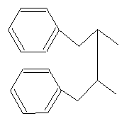
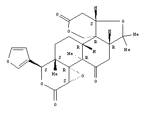
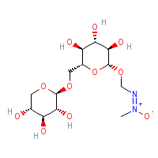
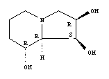

A | B | C | D | E | F | G | H | I | J | K | L | M | N | O | P | Q | R | S | T | U | V | W | X |Z
ichnotaxon: "a taxon based on the fossilized work of an organism" (International Code of Zoological Nomenclature), for example, the galleries made by mining insects in a fossilised leaf, usually genus + species, see also taxon.
idioblast: literally, a unique cell, a clearly distinct, specialised and/or differentiated cell, e.g. sclereidal idioblast, myrosinase idioblast, not really very helpful and can often be omitted or simply replaced by "cell".
imbricate: in general, of organs overlapping in such a way that part is covered, part exposed, of aestivation, the parts
having the edges overlapping in the bud such that at least some parts have one edge oustide, the other inside, see cochleate, contorted, contortiplicate, crumpled, decussate, quincuncial, c.f. open, valvate.


imperfect: of flowers, lacking either functional carpels or stamens and thus either either staminate or carpellate, c.f. perfect, see carpellate, neuter, staminate.
inaperturate: of pollen grains that apparently lack any apertures, also called omniaperturate, c.f. anasulcate, colpate, colporate, porate, pororate, sulculate, tenuitate, trichotomosulcate, ulcerate and zona-aperturate.
incised: cut deeply, sharply and often irregularly (an intermediate condition between toothed and lobed).
in- (prefix): without, lacking.
included: enclosed, not protruding; of stamens, etc., in a corolla tube, c.f. exserted.
included phloem = interxylary phloem or successive cambia.
incompletely tenuinucellate: an ovule in which no nucellar cells separate the megasporocyte(s)/embryo sac from the epidermis laterally and there is an endothelium, but there are nucellar cells below the the embryo sac (see Endress 2003c), c.f. crassinucellate, nucellar cap, nucellar pad, tenuinucellate, weakly crassinucellate (different degrees of development of the nucellus or the epidermis covering it).
incrassate = thickened.
incumbent: of the orientation of an embryo, with the cotyledons lying face to face and folded sideways so that the radicle lies against the face of one of the cotyledons, c.f. accumbent, conduplicate, diplecolobous.
incumbent: in Orchidaceae, of the orientation of an anther, bent adaxially/inwards ca 90°, for other commonly-used terms specific to orchid flowers, see caudicula, column, hamulus, labellum, rostellum, massulae, sectile, stipes, tegula, viscidium, also epichile, hypochile.
incurved: bent or curved inwards, upwards, or adaxially, c.f. recurved.
indefinite: variable in number, numerous, = many; of stamens, more than twice as many as the petals or sepals; of ovules, more than fifteen or so, c.f. definite.
indehiscent: not opening at maturity, c.f. dehiscent.
indeterminate: of growth, a general term used when the apical meristem produces an unrestricted number of lateral organs, in particular, when the axis is not terminated by a flower (see loosely racemose) or by the abortion of the apex, c.f. determinate.
indole alkaloids: alkaloids that contain an indole ring, derived from phenylalanine or tryptophane; the indole ring itself is a six-membered benzene ring joined to a five-membered nitrogen-containing pyrrole ring - the two rings at the top left of the structures below.
| Vincamine, C21 H26 N2 O3. |
Yohimbine, C21 H26 N2 O3. |
indumentum: the overall appearance of the epidermal appendages, e.g. hairs and/or scales,
collectively, see arachnoid, arbuscular, canescent, hirsute, hispid, lepidote, puberulous, pubescent, sericeous, stellate, strigose, tomentose, villous (types), see also glabrate, glabrescent (both referring to persistence) and glabrous. 
induplicate: of aestivation, valvate, the edges of a sepal or petal are not overlapping, but they are incurved when they meet an adjacent member, c.f. crumpled, decussate, open, reduplicate.
induplicate: of plicate leaves, esp. in palms, the units of the leaves having their adaxial surfaces facing each other, V-shaped, c.f. foliate, reduplicate.
indurated = hardened and rather inflexible.
indusium: a flap of tissue covering the sorus in some ferns; a concave pollen-cup surrounding the stigma in Goodeniaceae.
inertinite: fossilized charcoal in sedimentary rock produced by fires.
inferior: of an ovary, borne at least
partly below the level of attachment of the other floral parts, c.f.
superior, c.f. also epigynous,
hypogynous,
perigynous. 
inflexed: bent sharply upwards, forwards or adaxially, c.f. deflexed.
inflorescence: that part of the stem above the uppermost node with foliage leaves that bears flowers, also, the groupings or arrangements in which these flowers are
borne, c.f. infructescence, see inflorescence axis, peduncle (parts), also cymose,
racemose, also determinate,
indeterminate, also monotelic,
polytelic, also anauxotelic,
auxotelic, also synflorescence, also axillary, cauliflorous,
ramiflorous, supra-axillary, terminal (general position). 

inflorescence axis: the main axis of an inflorescence bearing inflorescence branches and/or flowers, c.f. peduncle, rachis.
inflorescence bract: an often more or less reduced leaf subtending a branch of the inflorescence or borne on the inflorescence axis below any branches or flowers, c.f. bract, bracteole.
infraspecific: of lower taxonomic rank than species.
infra-stylar extra-gynoecial compitum/pollen tube growth: in a more or less apocarpous gynoecium, where mucilage outside the stigmas allows pollen grains landing on the mucilage to fertilise ovules in any of the carpels, see also supra-stylar extra-gynoecial compitum/pollen tube growth, in the strict sense applied to a cup at the apex of the gynoecium, see hyperstigma, c.f. intragynoecial compitum, , transmission tissue.
infratectum: of a pollen grain, that part of the ectexine between the foot layer and tectum, see alveolate, columellate and granulate, c.f. also supractectal structures/sculpture elements.
infructescence: that part of the stem axial system that bears fruits, the grouping or arrangement in which fruits are borne on a plant, c.f. inflorescence, see axillary, cauliflorous, ramiflorous, supra-axillary, terminal (general position).
infundibular: e.g. of a polysymmetric corolla, gradually widening from the base to the more or less spreading lobes, generally resembling a funnel, c.f. campanulate, rotate, salverform, tubular, urceolate.  (funnel-shaped in the image).
(funnel-shaped in the image).
ingroup: the clade of immediate interest, c.f. outgroup, sister group.
initial: see cambial initials.
initial zone: a part of the shoot apical meristem consisting of slowly-dividing stem cells surrounded by the morphogenetic zone; the initial zone can be divided (different patterns of gene expression) into a centrally-located organizing centre that produces and maintains the stem cells at the summit of the meristem (see Friedman et al. 2004).
inner bark: a non-technical term for the inner part of the bark, specifically the secondary tissues of the phloem, c.f. outer bark.
innovation: in plants with intermittent growth, the stem and associated leaves produced during each period of growth.
inolizidine alkaloid: a polyhydroxy alkaloid.
inquiline: animal that lives commensally in the dwelling place of another animal.
insectivorous: catching and feeding on insects.
inserted: attached to, arising from.
intectate: a pollen grain lacking a tectum, but with sculpturing.
integument: in general, a covering; specifically one of the layers of tissue that usually cover the ovule, enveloping the nucellus and forming the micropyle where it meets at the apex of the ovule, see endothelium, c.f. also antiraphe, chalaza, funicle, embryo sac, raphe.
integumentary tapetum = endothelium.
inter- (prefix): between.
intercalary: between two points, thus intercalary growth, extension or growth from an intercalary meristem, i.e. neither from the apex nor the base of the internode, intercalary inflorescence, an inflorescence that either arises
in an internodal position, or one that was originally terminal but ceases to be
so when vegetative growth subsequently resumes from the stem apex; c.f. axillary, leaf-opposed, supra-axillary. 
intercalary meristem: an actively-growing region of primary tissue somewhat removed from the apical meristem and occurring between regions of more or less differentiated tissues, e.g. at the base of a monocot leaf, in some internodal regions, etc.
interfascicular cambium: a lateral meristem developing from tissues in the region between the vascular bundles, and, with the fascicular cambium, making up the vascular cambium.
interfascicular region: tissues in the region between the vascular bundles.
intermediary cell: in minor vein phloem, a type of companion cell that abuts the bundle sheath in which the walls have numerous branched plasmodesmata, the branches being narrower and more numerous in the walls on the intermediary cell side than on the the bundle sheath cell side, c.f. transfer cell.
intermediate meristem: of a root apical meristem in which cell files giving rise to different tissues trace to the initials at the apex, but the initials are not clonally distinct, c.f. closed meristem, open meristem.
intermediate: of the stem vascular system, in which the sympodia are partly discrete and separate from the others, and partly connected by fusions of vascular bundles, c.f. closed, open.
internal phloem: primary phloem that is found adaxially or internally to the xylem in the stem, in the leaf manifest as a bicollateral vascular bundle, c.f. included phloem, successive cambia, c.f. also amphicribral, amphivasal, collateral.
internode: the portion of a stem between the level of insertion of two successive leaves, leaf pairs or leaf whorls, or branches of an inflorescence, i.e. between two nodes.
interpetiolar: e.g. of stipules,
between the petioles of two opposite leaves, c.f. intrapetiolar, sheathing.

interrupted: e.g. of an inflorescence, having the flowers unevenly distributed along the axis, with conspicuous gaps.
interxylary phloem: in secondary vascular tissue, phloem islands surrounded by xylem in a stem or root with a single vascular cambium, c.f. internal phloem, successive cambia, c.f. also amphicribral, amphivasal, bicollateral, collateral.
intine (both Erdtman and Faegri and Iverson): the innermost of the major layers of the pollen grain wall, underlies the exine and borders the cytoplasm, not resistant to acetolysis resistant and therefore absent in conventionally prepared palynological material, development under control of the developing spore, i.e. gametophyte, see also oncus and Zwischenkörper, c.f. ectexine and endexine.
intra- (prefix): borne immediately adaxially or admedially to the structure that this prefix qualifies, e.g. intrastaminal nectaries, nectaries borne on the receptacle between the staminal whorl and the ovary; more loosely, intra- = within.
intragynoecial compitum = compitum (but this is a loose equivalence), c.f. extragynoecial compitum.
intramarginal vein: a continuous more or less looping vein that runs admedially to/inside the leaf blade margin and which joins the secondary veins, a composite vein usually formed by linking parts of secondary veins, as in brochidodromous venation, c.f. fimbrial vein.
intrapetiolar: e.g. of stipules, between a petiole
and the stem on which they are borne, c.f. interpetiolar, sheathing.

intravaginal squamule = colleter.
intraxylary phloem, a confusing term, = included phloem or internal phloem.
introduced: c.f. adventive, native.
intron: part of a gene sequence that is transcribed but not translated, being spliced out before this, c.f. exon.
introrse: of anthers, dehiscing adaxially
towards the centre of the flower, c.f. extrorse, latrorse.

intrusive: pushing into something, e.g. of placentae protruding into the ovary loculus, of endosperm haustoria, pushing into or between cells, or of cell growth, where a cell pushes between neighboring cells that separate along the middle lamella.
intrusive-parietal: of the placentation or arrangement of the ovules in an ovary of a syncarpous gynoecium (inapplicable if the gynoecium is pseudomonomerous), in which the placentae protrude from the margin more or less deeply into the ovary loculus, c.f. apical, axile, basal, free-central, laminar, marginal, parietal.
intussusception: in cell wall formation, growth by addition of new wall material within previously formed wall, c.f. apposition.
inulin: a fructan that acts as a storage polysaccharide, yields fructose on hydrolysis, c.f. callose, cellulose, hemicellulose, inulin, pectin, starch.
| Inulin, (C6 H10 O5)n. |
invasive: an intermediate tapetal "type", where the cell walls degenerate but the protoplasts do not fuse, individual protoplasts intruding into the loculus (e.g. Verstraete et al. 2014), c.f. amoeboid and glandular.
inversostyly: flowers of a species having different style and stamen arrangements, the lengths not varying and the flowers of any one plant being identical, c.f. heterostyly.
involucel: a group of "bracts" surrounding a secondary inflorescence such as the base of an umbellule, or of "bracteoles" surrounding an individual flower, as in Dipsacaceae, although the morphological interpretation of these structures may be a matter of dispute.
involucre: a group of inflorescence bracts surrounding an inflorescence.
involute: of leaf vernation, where the margins of the lamina are independently rolled towards the adaxial surface, i.e. to the centre/midrib, c.f. circinate, conduplicate, conduplicate-flat, conduplicate-involute, conduplicate-plicate, curved, flat, plicate, revolute, supervolute, supervolute-curved, supervolute-involute. 
iridoids: subclass of terpenoids, monoterpenoids with lactone substitutions (the right half of the diagram below), usually in glycosidic form, in nearly all deoxyloganic acid or epi-deoxyloganic acid is an intermediary, see route I iridoids (including secoiridoids) and route II iridoids (including carboxylated and decarboxylated iridoids).
| Iridoid base. |
iridoplast: a modified plastid in which thylakoids are stacked in threes, adjacent stacks overlapping slightly, the stacks extending across the plastid, c.f. bizonoplast, chloroplast, chromoplast, leucoplast, sieve tube plastid.
irregular (of floral symmetry) = asymmetric, sometimes also used for monosymmetric flowers.
iso- (prefix): equal in number of parts or appearance, in chemical names, refers to an isomer.
isobifacial: of flattened structures, especially leaves, having both surfaces structurally similar, c.f. bifacial, dorsiventral, unifacial.
isobilateral: of symmetry, = disymmetric.
isoetid: refers to small, often submerged plants with their leaves in a rosette and with their roots representing a large portion of their biomass (e.g. see Raven et al. 1988).
isoflavans: isomeric form of flavones with the most reduced structure of any isoflavonoids that lack hydroxy or ketone groups, i.e. there are no oxygens in the structure; they are common as phytoalexins in Fabaceae.
| Isoflavan, C19 H22 O5. |
isoflavones: class of flavonoids in which the B ring of flavones is attached to the 3-position (instead of the 2-position), absorbing light in the ultraviolet region and a component of "bee violet".
| Base structure, C15 H10 O2. |
Luteone, C20 H18 O6. |
| Wighteone, C20 H18 O5. |
isoflavonoids: class of flavonoids in which the B ring of flavones is attached to the 3-position (instead of the 2-position) and that lack the 3-hydroxy group of flavonols.
isokestose: oligosaccharides, inulin trisaccharide, the building block of inulin-type fructans; c.f. kestose.
| 1-kestose, C18 H32 O16. |
isomerous: with an equal number of parts in each whorl of the flower, except perhaps the gynoecial whorl, c.f. anisomerous.
isopentenyl pyrophosphate: the building unit of terpenes.
| Isopentenyl pyrophosphate, C5 H12 O7 P2. |
isoprene: a volatile unsaturated branched chain five-carbon hydrocarbon that is the basic unit of terpenes, synthesised via the mevalonic acid pathway, forming complex polyisoprenes.
Isoprene, C5 H8. |
isoquinoline alkaloids: type of true alkaloid, formed from a precursor of 3,4-dihydroxytyramine (dopamine) linked to an aldehyde or ketone.
Isoquinoline nucleus. |
Berberine, C20 H18 N O4. |
Hydrastine, C21 H21 N O6. |
Papaverine, C20 H21 N O4. |
isothiocyanates: esters of isothiocyanic acid, R—N=C=S, a.k.a. mustard oils, with a pungent smell and a sharp taste, derived from glucosinolates undergoing an enzymatic reaction (via the enzyme myrosinase) when plant tissue is crushed, c.f. nitriles.
iteroparous: of reproduction, when there are repeated annual/seasonal bouts of flowering, c.f. plietesial, semelparous, c.f. more from the point of view of meristem persistence hapaxanthic, monocarpic, pleonanthic, and of plant duration, annual, biennial, ephemeral, perennial.
jaculator: a hardened and hook-like funicle that is conspicuous in the seeds of many Acanthaceae, rare elsewhere.
jugate = paired.
juvenile: of leaves, those on a young plant that differ in form from those on an adult, sometimes also found on sucker or reiterating shoots, i.e. when the plant is heteroblastic, c.f. anisophyllous, heterophyllous.
kaempferol: a common flavonol with a single hydroxyl group attathed to the B ring; occurs as a copigment in flowers and fruits.
| Kaempferol, C15 H10 O6. |
karyotype: the gross morphology of the somatic chromosome set, described at metaphase of mitosis in terms of chromosome number and length, centromere position, etc.
keel: the relatively large paired abaxial petals (in a papilionoid flower), or a single petal (in some other plants) that together or singly are more or less concave and with an abaxial ridge, usually more or less enclosing the stamens, c.f. standard, wings; more generally keeled, of leaves, petals or bracts, = folded and ridged along the midrib.
Keimhof/Keimhöfe, = oncus/onci.
kernel: a vague term, not recommended (it can mean endosperm, embryo, etc.).
key: series of contrasting choices by which an unknown plant may be identified by the process of elimination, see multiple access, polyclave.
key innovation: an apomorphy that facilitates subsequent radiation/diversification/success of the clade it characterises, see also autapomorphic, synapomorphic.
kestose: a frutosyl sucrose oligosaccharide, may serve as intermediates in the biosynthesis of fructans, c.f. isokestose.
Kestose, C18 H32 O16. |
Kranz: distinctive leaf anatomy of many C4 plants in which the regularly-spaced vascular bundles are surrounded by a sheath of large cells, themselves containing large chloroplasts, and then by radially-arranged mesophyll cells.
L- (prefix): laevo, handedness of isomers, all naturally-occurring amino acids are L-; see L-tryptophan, L-phenylalanine, etc.
LPP: a kind of photosynthesis not that dissimilar to C4 photoynthesis in which CO2 from the plant, as well as from the anaerobic CO2 rich soils in which it grows, accumulates and moves to the leaves, and also oxygen from the atmosphere moves to the roots, both movements occuring via a parichnos system; acidity changes are slight (see Green 2010), c.f. also C3, and CAM, CAM cycling.labellum: any rather large and lip-like structure in a flower, usually in the abaxial or lower position, e.g. in Orchidaceae (a perianth member), Zingiberaceae and Costaceae (derived from petaloid staminodes).
labellum: in Orchidaceae, the distinctive median tepal of the inner whorl (see epichile, hypochile) - for other commonly-used terms specific to orchid flowers, see caudicula, column, hamulus, incumbent, labellum, rostellum, massulae, sectile, stipes, tegula, viscidium, also epichile, hypochile.
laciniate: slashed into narrow, pointed lobes.
lactones: cyclic compounds with a 5-6-membered ring in which the chain is closed by ester formation between a carboxyl and a hydroxyl group in the same molecule; see cardiac glycosides,
iridoids, sesquiterpene lactones.| Parasorbic acid, C6 H8 O2. |
lacuna: a gap or cavity, see nodal anatomy.
lagenostome: a pre-pollination pollen chamber formed at the apex of the megasporangium wall (nucellus) of some gymnosperms by cell degeneration in which pollen may collect, c.f. antiraphe, chalaza, epistase, female gametophyte, funicle, hypostase, integument (see also endothelium), megaspore, micropyle, pollen chamber, obturator, podium, ponticulus, postament, raphe.
lalongate: where the longest axis of an endoaperture of the compound aperture of a pollen grain is perpendicular to the longest axis of the ectoaperture, c.f. lolongate.
lamella: a thin, plate-like layer, see middle lamella.
lamina: the blade of a leaf, usually flattened, dorsiventral, and expanded, often with a midrib, note that whether the blade of a monocot leaf should be considered equivalent to the lamina s. str. of other angiosperm leaves is debatable, c.f. cross-zone, hyperphyll, hypophyll, leaf base, plate meristem, ligule, petiole, plate meristem, stipule, and Vorläuferspitze, see admedial, exmedial (positional terms); the lamina margin often with teeth, see also biserrate, crenate, dentate, entire, serrate, sinuate, undulate, see also venation.
laminar: of the placentation or arrangement of the ovules in an ovary of a syncarpous gynoecium (inapplicable if the gynoecium is pseudomonomerous), the ovules not being localised on placentae but scattered along the septae, c.f. apical, axile, basal, free central, intrusive-parietal, marginal, parietal.
lateral: borne lateral to the axis of symmetry of the flower relative to the inflorescence axis, that is, lateral to the line joining the flower, the bract subtending it, the inflorescence axis on which it is borne, c.f. abaxial, adaxial, median.
lateral: of a style or stylulus that arises from the side of the gynoecium, c.f. gynobasic, terminal. 
laterally compressed: of axillary structures, flattened laterally, so extended in the ad-/abaxially or median plane, c.f. laterally compressed, see also angustiseptate and latiseptate fruits.
lateral meristem: a meristem of stem or root arranged parallel with the sides of the organ in which they occur, see cork cambium, cuticular epithelium, master cambium, polyderm, vascular cambium, c.f. apical meristem.
laterocylic: of paracytic stomata where the subsidiary cells are parallel to the long axis of the stoma and completely surround the latter, c.f. brachyparacytic.
laterocytic: of stomata, with three or more distinct subsidiary cells partially (not at the apex or base) surrounding the guard cells, see actinocytic, allelocytic, anisocytic, anomocytic, cyclocytic, diacytic, helicocytic, paracytic, staurocytic, stephanocytic, tetracytic.
late wood: wood, strictly speaking xylem, produced later in the growing season, often darker in colour and with narrower xylem elements, c.f. early wood.
latex: a viscous fluid exuded from the cut surfaces of the leaves and stems, in the strict sense referring to polymers made up of isoprene units in the cis- configuration (gutta has those same units in the trans configuration), borne in laticifers, c.f. gums, mucilages, oils, resins, waxes.
laticifers: a system of long multinucleate tubes in which latex is found, see articulated and non-articulated laticifers.
laticiferous cell = non-articulated laticifer.
laticiferous vessel = articulated laticifer.
latiseptate: of a fruit that is flattened in a direction parallel to the septum, which thus traverses the broad axis of the ovary, c.f. angustiseptate.
latrorse: turned sideways, i.e. neither towards or away from
axis; of anthers, opening laterally towards adjacent
anthers, c.f. extrorse, introrse. 
lauric acid: a saturated fatty acid.
leaf: commonly thought of as one of the three basic parts of the seed plant body along with the root and stem a structure usually of determinate growth, without secondary thickening, and of superficial origin, often flattened and photosynthetic in part, and in the axil of which is usually a bud or buds, approximately = phyllome, c.f. caulome, see anaphoric and cataphoric (rotation in bud), compound, scale, simple (kinds of leaves), ascidiate (particular variant of leaves), megaphyll, microphyll (leaf types based on presumed origin), also hyperphyll, hypophyll, lamina, leaf base, ligule, petiole, stipule, and Vorläuferspitze (parts of angiosperm leaves), frond, stipe (parts of fern leaves), also bifacial, dorsiventral, isobifacial, unifacial (leaf faces), also alternate, bijugate, decussate, distichous, opposite, pseudoverticillate, spiral, spiromonistichous, tristichous, whorled (arrangement), also sporophyll, tropophyll (bearing sporangia or not); see also leaf teeth, venation and vernation.
leaf base: the bottom part of a leaf, c.f. cross-zone, hyperphyll, hypophyll, lamina, ligule, petiole, stipule, and Vorläuferspitze; Kaplan (1997, 1: chap. 9) considers the leaf base to be an integral part of the stem/internodal region.
leaf gap: in nodal anatomy, a parenchymatous interruption in the central vascular cylinder that occurs as a vascular bundle, a leaf leaf trace, departs, see also reparatory strand, c.f. perforation.
leaflet: one of the ultimate segments of a compound leaf, see petiolule, stipel.
leaf-opposed: of an inflorescence or bud, arising from the stem opposite the point of insertion of a leaf, c.f. axillary, intercalary, ramiflorous, supra-axillary, terminal. 
leaf trace: in nodal anatomy, a vascular bundle that diverges from an axial bundle or another leaf trace and that supplies a leaf, c.f. leaf gap, see also reparatory strand.
lectins: a group of hemagglutinating proteins (hemagglutinins) found primarily in plant seeds, which bind specifically to the branching sugar molecules of glycoproteins and glycolipids on the surface of cells.
legume: the fruit of some Fabaceae, formed from one carpel and dehiscent along one or both sides, explosively so or not, sometimes also used for other fruits in the family whether dehiscent or indehiscent, winged or not, splitting transversely or not - hence a term of little use; also a crop species in the family Fabaceae.
lemma: part of a grass floret, the lower of two bracts enclosing a flower (the other is the palea), perhaps a bract s. str., see also glume (of a spikelet), lodicule.
lenticel: a loosely-packed mass of often more or less rounded cork cells occurring especially in the young stem, bark or even leaf of a plant, visible on the surface as a raised, often powdery-appearing spot, through which gaseous exchange occurs, c.f. pneumathode (on a root).
lenticular: shaped like a biconvex lens.
lepidote: of indumentum, made up of scales, c.f. arachnoid, arbuscular, canescent, hirsute, hispid, puberulous, pubescent, sericeous, stellate, strigose, tomentose, villous, see also glabrescent and glabrate, which refer to stages in the loss of these hairs.
lepto- (prefix): slender.
leptocaul: of trees, with more or less slender trunk and branches, c.f. pachycaul, see habit.
leptmorph: of bamboos, where the rhizome is monopodial, elongated, and more slender than the culms, c.f. pachymorph.
leptom(e): the sieve elements and associated parenchymatic cells of phloem tissue, c.f. hadrom(e), stereom(e).
leptophyll: in ecology, the blade of a leaf or leaflet <25 mm2 in surface area, c.f. macrophyll, megaphyll, mesophyll, microphyll, nanophyll, notophyll.
leptosporangium: esp. used in ferns, a sporangium that develops from a single superficial cell, the wall of the sporangium being a single cell layer thick, c.f. eusporangium.
leucoanthocyanins = proanthocyanidins.
leucodelphinidin: a proanthocyanidin.
leucoplast: a colorless plastid, c.f. amyloplast, elaioplast, proteinoplast.
liane: of habit, a climbing or twining plant, usually applied to woody climbers, c.f. acaulescent, arborescent, dendroid, frutescent, fruticose, herb, rheophyte, suffrutescent, schopfbaum, shrub, subshrub, tree, vine, see also life forms.
libriform fibre: a fiber, the longest cell in the xylem, that has more or less simple pits, c.f. fiber tracheid, tracheid, the three making a continuum of forms.
life forms: a classification of the growth forms of plants based on the position of the resting buds and the duration of the life of the shoot, in part see chamaephyte, cryptophyte (geophyte, helophyte, hydrophyte), hemicryptophyte, phanerophyte, therophyte, see also habit.
light line (of a seed coat) = linea lucida.
lignan: colorless, crystalline, solid, dimeric compounds derived from precursors related to those involved in the formation of lignin, i.e. the union of two units of phenylpropane, cinnamic acid, or their derivatives, through their aliphatic side-chains, they occur in chiral forms (as opposed to lignins), c.f. neolignans.
| Lignan base.  |
Sesamin, C20 H18 O6. |
| Justicidin, A C22 H18 O7. |
lignin: a class of polymers formed from mostly C6-C3 monomeric units, cinnamic acid, coumarins, that yield three main kinds of lignin building blocks, hence G, H and S units/lignin, and occuring in all plants; lignification, the deposition of lignin e.g. in secondary cell walls, see lignan, neolignans, c.f. cellulose, hemicellulose.
lignotuber: a woody swelling at the base of the shoot system below or just above the ground, containing adventitious buds from which new shoots develop if the top of the plant is cut off or burnt, common in many fire-tolerant shrubs, c.f. bulb, bulbil, caudex, corm, culm, dropper, pseudobulb, rhizome, runner, stolon, tuber, turion.
ligule: a membranous or hairy appendage
on the adaxial surface, e.g. of a leaf at the junction
between sheath and blade, especially in Poaceae - c.f. cross-zone, hyperphyll, hypophyll, lamina, leaf base, petiole, stipule, and Vorläuferspitze, or a similar structure at the junction of two parts of a petal, e.g. claw and limb (see also corona); also, an adaxial appendage near the leaf base
in some monocots and in Selaginellaceae, etc.; adj. ligulate. 
ligule: the strap-shaped corolla limb in ray flowers of Asteraceae, adj. ligulate.
limb: the upper, free, spreading portion of
a corolla or perianth that is connate at the base; the expanded portion
of a sepal or petal above the
claw.  (not labelled in image).
(not labelled in image).
limonoids: type of triterpenoid (tetranortripterpenes), bitter compounds, pentacyclic, with a furan ring attached as a side chain.
| Dysoxylin, C28 H32 O9. |
Limonin, C26 H30 O8.  |
linea fissura: an inconspicuous line on the surface of the seed coat marking a weakness in the testa, the whole making the pleurogram, as in Fabaceae-Mimosoideae, c.f. hilum, micropyle, pleurogram; the linea lucida is an unrelated structure.
lineage: strictly speaking, an ancestral-descendent series of individuals, but often used interchangeably with clade, in which case the latter is preferable.
linea lucida: of the testa (or could be tegmen), a bright line seen under the microscope running periclinally through heavily thickened palisade cells (see the Malpighian layer) and separating more or less thickened parts of the cells which as a result may seem to be a double layer of cells; the linea fissura is an unrelated structure.
linear: very narrow in relation to the length,
and with the sides parallel.

linear coumarin: furanocoumarins in which the furan ring is in line with the benz-2-pyrone nucleus, as in psoralen, often phototoxic, c.f. angular coumarins.
Furanocoumarin base. |
Psoralen, C11 H6 O3. |
linguiform, lingulate: tongue-shaped.
lipid: a class of small moleculaes that are hydrophobic or both hydrophobic and hydrophilic and that includes fats, waxes, mono[etc.]glycerides, phospholipids, etc..
lithocyst: enlarged epidermal cell, usually of a leaf, containing a cystolith.
lithophyte: a plant that grows on the surface of unweathered rock, c.f. amphibious, aquatic, epilithic, epiphyte, terrestrial.
lobed: of the apex of any laminar structure, e.g., petal, leaf blade, divided more than 25% the length of the structure, c.f. emarginate, retuse.
locule, loculus: an enclosed compartment within an organ, e.g. an ovary, an anther, pl. loculi, dim. locellus.
loculicidal: of the dehiscence of
capsules, along lines down the centres of the outer walls of the loculi or between the placentae when the placentation is parietal, c.f. circumscissile, poricidal, septicidal, septifragal. 
lodicule: in a grass floret, one of a pair (or three?) of tiny scales or flaps of tissue between the lemma and palea and the stamens, possibly representing reduced inner perianth members, see also glume (of a spikelet).
lolongate: where the longest axis of an endoaperture of the compound aperture of a pollen grain is parallel to the longest axis of the ectoaperture, c.f. lalongate.
lomentum: a schizocarp-type fruit formed from one or more carpels and having distinct transverse constrictions or lines where
splitting occurs, breaking transversely into one-seeded segments when
mature. 
long-day: of a photoperiodic response, where long periods of light alternating with short periods of dark are neeeded for flowering to occur (more accurately, no long uninterrupted period of dark), c.f. short-day.
long shoot: a shoot in which all or most of the internodes elongate, c.f. short shoot; the comparison is often made between axillary shoots.
lophate: pollen in which the surface is honeycomb-like because of thickenings of the exine, c.f. baculate, echinate, fossulate, gemmate, foveolate, pilate (gemmate and retipilate are variants), psilate, reticulate, retipilate, rugulate, scabrate, striate, and verrucose.
lower: of parts of a flower in particular, generally can be replaced by abaxial, c.f. upper.
lupinine: a quinolizidine alkaloid.
lupin-type nodule: a type of nodule caused by nitrogen-fixing bacteria in Fabaceae, perhaps indeterminate, with a broad subcortical meristem, and forming a more or less ruff-like structure with a broad attachment to the root, c.f. aeschynomenoid, caesalpinioid, crotalarioid, and desmodioid.
lumen: (pl. lumina), an element of pollen surface ornamentation, a space enclosed the muri.
luteolin: hydroxylated flavone derivative, common in leaves and flowers.
luteone: an isoflavone.
lycopsid photosynthetic pathway = LPP.
lysigenous: of cavities in plants, formed by the dissolution of cells, c.f. expansigenous, rhexigenous, schizogenous.
MA: dry leaf mass per unit area, the inverse of SLA.
macro- (prefix): large, often used as an alternate for mega.
macrophyll: in ecology, the blade of a leaf or leaflet 18225-164025 mm2 in surface area, roughly 18 x 10 cm to somewhat more than 60 x 25 cm, c.f. leptophyll, megaphyll, mesophyll, microphyll, nanophyll, notophyll.
macropodial, macropodous: of an embryo lacking well developed cotyledons and in which the reserves are stored in a massive hypocotyl.
macrosclereid: a sclereid cell ca 2-4 times longer than broad, lacking processes, c.f. astrosclereid, filiform sclereid, brachysclereid, osteosclereid, trichosclereid.
macrozamin: cycad toxin with primoverose.
| Macrozamin, C13 H24 N2 O11. |
magnolioid root: a stout (0.5 mm across or more) lateral root with no or very few and short and stout root hairs, c.f. fibrous root, hair root, nodule, tap root, and tuberous root.
male, e.g. of a flower that has functional staminate parts alone, = staminate.
malegametophyte: a plant body or cell lineage formed by vegetative growth of the microspore, see generative cell, sperm, vegetative cell, also binucleate and trinucleate pollen grains, c.f. femalegametophyte.
malic acid: a carboxylic acid with the formula HOOC-CH2-CHOH-COOH, c.f. citric acid.
Malpighian layer: a palisade layer of the seed, esp. of the exotesta but of various origins, that has much thickened walls, see linea lucida.
malpighiaceous hair: a unicellular, T-shaped hair with a short stalk and often looking fusiform from above, = unicellular T-shaped hair, c.f. colleter, collar rhizoid, dendritic, root hair, stellate.
malvoid: a leaf tooth in which the medial vein forms a non-glandular persistent apex, lateral veins are not involved, c.f. begonioid, chloranthoid, cucurbitoid, cunonioid, dillenioid, monimioid, platanoid, rosoid, salicoid, spinose, theoid, urticoid, violoid.
mammillate: having small, nipple-shaped projections.
mangiferin, mangostin: two xanthones.
mannans: a cell wall storage polysaccharide in which mannose is the main sugar, forming a matrix that lacks cellulose and pectins in the same proportions as in the primary cell wall, divided into pure mannans, galactomannans and glucomannans, c.f. galactans and xyloglucans.
mannitol: a hexitol or polyol (sugar alcohol) formed e.g. by reduction of mannose, occurs in gum exudates, c.f. arabitol, dulcitol, glycerol, sorbitol (isomer of mannitol), and xylitol.
Mannitol, C6 H14 O6. |
mannose: a hexose sugar, c.f. fructose, glucose.
many: of floral parts, a large an often indefinite number, usually 15 or more.
manoxylic: of xylem produced by vascular cambium, esp. of gymnosperms, containing abundant parenchyma and few tracheids, c.f. fugacious, pycnoxylic.
marcescent: withering, but without falling off, c.f. accrescent, caducuous, deciduous, deliquescent, fugacious, persistent.
marginal: occurring at or very close to the margin, a kind of placentation usually used when carpels are separate, c.f. apical, axile, basal, free central, intrusive-parietal, laminar, parietal. 
marginal [or lateral] blastozone: a more or less interrupted strip-like portion along the margins of the primordial leaf blade that retains the potential for organogenetic activity, primary differentiation occuring and causing lobing or the development of leaflets, c.f. meristem.
margo: the peripheral part of the membrane in a bordered pit in gymnosperms, etc., consisting of rather sparse cellulose microfibrils of the primary wall, c.f. bars of Sanio, torus.
mast: originally used for the fallen fruits of European Fagaceae, now extended to e.g. Dipterocarpaceae, as good or poor mast years, years with much or little fruiting; masting (adj.).
master cambium: a lateral meristem producing successive cambia and conjunctive tissue internally, c.f. cork cambium, cuticular epithelium, polyderm, vascular cambium.
massulae: in Orchidaceae in particular, a group of pollen tetrads of irregular number and so size, but less than the contents of an entire theca, derived from a single archesporial cell, and making up a sectile pollinium - for other commonly-used terms specific to orchid flowers, see caudicula, column, hamulus, incumbent, labellum, rostellum, stipes, tegula, viscidium, also epichile, hypochile; also in general palynology, c.f. monad, polyad, tetrad.
matrotrophic: sometimes used of the embryo of embryophytes, dependent on the gametophyte for its nutrition, lit. "mother-eating" or "mother-food".
maytansinoid: ansamycin antiobiotics with a partly unsaturated 19-membered ring made up of 18 carbons and one nitrogen.
median: the plane through an axis and the axis from which it originates, e.g. in a flower, the axis of symmetry of the flower relative to the inflorescence axis, that is, on the plane joining the flower, the bract subtending it, the inflorescence axis on which it is borne, c.f. abaxial, adaxial, lateral.
medullary bundle: a vascular bundle traversing the pith, c.f. cortical bundle.
medullary ray = interfascicular region.
medullated: with pith, used e.g. when talking about stelar morphology.
megagametophyte = female gametophyte.
megaphyll: lit. "a large leaf", a leaf of any size whose vascular supply leaves one or more gaps as it departs from the stem vascular tissue, in origin it may represent a planated branch system, the leaf itself generally has complexly-branched vascular bundles - not easy to define, and perhaps a term of doubtful utility, c.f. microphyll, see also enation.
megaphyll: in ecology, the blade of a leaf or leaflet >164025 mm2 in surface area, somewhat more than 60 x 25 cm, c.f. leptophyll, macrophyll, mesophyll, microphyll, nanophyll, notophyll.
megasporangium: a sporangium producing megaspores, = nucellus + megaspore(s) in seed plants, c.f. microsporangium.
megaspore: one of the two kinds of spores produced after meiosis in a heterosporous plant, and on germination giving rise individually, or rarely with other megaspores in some flowering plants, to the female gametophyte or embryo sac, c.f. microspore - n.b. a megaspore is not always larger than a microspore, and a (perhaps unecessary) size-neutral equivalent is gynospore.
megasporocyte: a sporocyte or meiocyte giving rise by a meiotic division to one or sometimes more megaspores, c.f. microsporocyte.
megasporophyll: a structure (perhaps a specialised leaf) upon which or in the axil of which one or more megasporangia are borne, in flowering plants, a carpel, c.f. microsporophyll.
megatherm: an organism that requires warm conditions for growth and development, c.f. microtherm.
meiocyte: a sporogenous cell that by meiosis gives rise to spores, see megasporocyte, microsporocyte.
meiosis: the two-stage division of a diploid nucleus during which gene recombination occurs and the number of chromosomes is halved, occurring once in every life cycle, sporic meiosis occurs in land plants immediately prior to the production of haploid spores during the alternation of generations (haploid and diploid generations alternating), gametic meiosis occurs in animals and some "algae" and leads directly to the production of haploid gametes (individuals are diploid), while zygotic meiosis occurs in some other viridiplantae and occurs immediately after the formation of the diploid zygote (individuals are haploid), c.f. mitosis.
meiospore: a spore produced by meiosis, as in land plants, see megasporocyte, microspore.
melanin: complex and resistant polymers formed from phenolic and indole monomers found in the walls of some ectomycorrhizal fungi ((and) in dark septate hyphae?) (Soudzilovskaia et al. 2015).
mellitophily: a variant of entomophilous pollination in which the flowers are pollinated by bees, see also bee purple (colour), buzz pollination (kind of pollination), and monolectic, oligolectic and polylectic (behaviour of pollinator), c.f. cantharophilous, myophilous, phalaenophilous, psychophilous, sapromyophilous, sphingophilous.
meranthium: of a flower that consists of two or more functionally independent units from the pollinator's points of view, as in Iris, the other extreme from pseudanthium.
mericarp: one segment of a fruit of a schizocarp that
has dehisced at maturity into units (often derived from the individual carpels) consisting of pericarp plus seed(s), c.f. nutlet. 
meristele: "we would like to seee the term eliminated from textbooks and from discussions of stelar morphology" (Beck et al. 1982), very often = vascular bundle.
meristem: a region of a plant in which undifferentiated cells actively divide, the result being new cells that ultimately differentiate, i.e. the cells have a capacity for morphogenesis and growth, see apical and lateral meristems, c.f. marginal blastozone.
meristemoid: a dividing cell, or small group of dividing cells, surrounded by more or less differentiated and undividing cells, e.g. a stomatal meristemoid, a cell whose immediate derivatives produce the stomata (or sometimes also subsidiary cells) - basically, a rather vague term and with different usages.
merism (merousness, merosity): the numerical relationship between the parts of the different whorls of the flower, see anisomerous and isomerous.
-merous, -mery: the number of parts per whorl in a flower that characterises a particular species, generally the same for the two perianth whorls, often also for the whorl(s) of stamens, least often for the carpelline whorl, e.g., three-merous, five-merous flowers, see pentamerous, trimerous.
mesarch: of a procambial strand, esp. xylem, in which the first-differentiated elements are in the centre of the strand, c.f. endarch, exarch.
mesifixed: attached by or at the middle, e.g. of anthers, see basifixed, embedded, versatile; of hairs, see malpighiaceous, T-shaped.
meso- (prefix): the equatorial region of a zonoaperturate pollen grain delimited by lines connecting the apices of the apertures, c.f. apo-.
mesocarp: the fleshy middle portion of the wall or pericarp of a succulent fruit, c.f. endocarp, exocarp.
mesocotyl: the internode between the haustorium/scutellum and the coleoptile in a monocot embryo or seedling, in fact an epicotyl that is congenitally fused with the base of the coleoptile (Tillich 2007), c.f. hypocotyl, of a monocot seedling, see also coleorhiza, hyperphyll (apocole, phanomer), hypophyll (cotyledonary sheath, coleoptile), collar (epiblast, periblast), also, an internode developing between the unequal cotyledons in some Gesneriaceae-Cyrtandroideae and -Epithematoideae after germination (see de Vogel 1980).
mesogamy: fertilisation during which the pollen tube penetrates the ovule laterally by way of the integuments, c.f. chalazogamy, porogamy, pseudoporogamy.
mesogenous: of stomatal ontogeny in which the subsidiary cells are produced from the same cell lineage that gives rise to the guard cells, one or more asymmetric divisions being involved (see e.g. Rudall & Knowles 2013), c.f. mesoperigenous, perigenous.
mesoperigenous: of stomatal ontogeny in which at least one of the subsidiary cells is produced from the same cell lineage that gives rise to the guard cells, a combination of mesogenous, perigenous developmental pathways.
mesophyll: photosynthetic tissue in the leaf in particular, see palisade, spongy.
mesophyll: in ecology, the blade of a leaf or leaflet 4500[an elliptic leaf ca 5 in. or 12.7 cm. long]-18225 mm2 in surface area, c.f. leptophyll, macrophyll, megaphyll, microphyll, nanophyll, notophyll.
mesophyte: of vegetation, characteristic of moist habitats and with soft, fairly large leaves predominating, c.f. sclerophyll, xeromorph, xerophyte.
mesopodium: an internode that separates the prophylls, c.f. epipodium, hypopodium.
mesotonic: a branching pattern in which the middle buds of a season's growth/innovation grow out most strongly, c.f. acrotonic, basitonic.
mestome sheath: the inner and endodermal layer of cells - the walls being thick and with suberized lamellae - of a two-layered bundle sheath surrounding a vascular bundle, c.f. parenchyma sheath, starch sheath.
metacentric: a chromosome in which the centromere is at or near the middle, the spindle fibers attaching there during nuclear division, c.f. acrocentric, holocentric, and telocentric.
metatopy/metatopia: dislocation of organs from their normal axillary position by differential growth, c.f. concaulescent, recaulescent, also href="glossarya_h.html#epicaulescent">epicaulescent.
metaxylem: later-formed primary xylem differentiating from the procambium, the tracheary elements having more or less continuously thickened walls with pits, c.f. protoxylem.
metaxyphyll: a more or less scale-like bract not subtending a flower and borne immediately below the terminal flower and above the lateral flowers of a botryoid inflorescence (see Wu et al. 2007 and references); if this is the correct definition, it seems like a term that can be done without...
methylazoxymethanol: toxic aglycone of cycasin and macrozamin.
| Methylazoxymethanol, C2 H6 N2 O2. |
methylflavones: derivatives of chalcones.
Methylflavone, C16 H12 O3.  |
methyl glucosinolates: a class of aliphatic, straight chain glucosinolates, see also sinapine.
| Methyl glucosinolate, C8 H15 N O9 S2. | Glucocapparin, C8 H15 N O9 S2. |
mevalonic acid: a carboxylic acid precursor of sterols, terpenes and other isoprenoids.
| Mevalonic acid, C6 H12 O4. |
microgametophyte = male gametophyte.
microphyll: lit. "a small leaf", a leaf not necessarily very small (they can be up to 1 m long) in which the vascular trace supplying it does not interrupt the central vascular cylinder when it departs, i.e. there are no leaf gaps, the leaf itself generally has a single, unbranched vascular bundle, evolutionarily perhaps representing an enation, but overall perhaps a rather fuzzy concept, c.f. megaphyll.
microphyll: in ecology, the blade of a leaf or leaflet 225-2025 mm2 in surface area, e.g. an elliptic blade ca 3 in. or 7.6 cm. long, c.f. leptophyll, macrophyll, megaphyll, mesophyll, nanophyll, notophyll.
micropyle: a small canal through the integument(s) at the apex of an ovule, either amphistomal, bistomal, endostomal, exostomal, naked, or zigzag, c.f. antiraphe, chalaza, funicle, embryo sac, integument, nucellus, obturator, podium, ponticulus, postament, raphe (the other parts of the ovule), and persisting as a pore on the seed coat, c.f. funicle, linea fissura.
microsporangium: sporangium producing microspores, usually many in number, in the life cycle of a heterosporous plant, c.f. megasporangium, see theca (arrangement of microsporangia), see also endothecium, exothecium, placentoid, tapetum (all tissues).
microspore: one of the two kinds of spores produced after meiosis in an heterosporous plant and on germination giving rise to the male gametophyte, in angiosperms, the pollen grain, see prepollen, true pollen, c.f. megaspore - n.b. a microspore is not always smaller than a megaspore, and a (perhaps unecessary) size-neutral equivalent is androspore.
microsporocyte: a sporocyte or meiocyte giving rise by a meiotic division to (usually) four microspores, c.f. megasporocyte, see callose ring.
microspore mother cell = microsporocyte.
microsporogenesis: the sequence of meiotic divisions that produces microspores, see simultaneous, successive.
microsporophyll: a structure on which one or more microsporangia are borne, in flowering plants, the stamen, c.f. megasporophyll.
microtherm: an organism that requires cool conditions for growth and development, c.f. megatherm.
middle lamella: the central layer of the wall between two adjacent cells, largely made up of pectinaceous substances, see primary wall, secondary wall.
midrib: the central, and usually the most
prominent, vein of a lamina or any leaf-like organ, c.f. costa.

miltanthaline: a benzylisoquinoline alkaloid.
mitochondrion: a cell organelle surrounded by two double membranes that originated by endosymbiosis and now is involved in respiration, containing circular DNAs, part of the plant genome.
mitosis: the normal division of a nucleus, whether haploid or diploid, during which chromosomes are replicated, c.f. meiosis.
mixotroph: a heterotroph, one obtaining complex nutrients, e.g. carbohydrates, partly by its own photosynthetic activities, and partly from its fungal associates, c.f. autotroph, biotroph, hemiparasite, heterotroph, hyperparasite, myco-heterotroph, parasite, saprobe/saprophyte/saprotroph
module: of growth, according to Hallé et al. (1978: p. 189) "shoot unit with determinate growth, either by apical abortion or conversion of the apex into an inflorescence", see sympodial unit; but module is best used in a more general sense, i.e., modular, of any structure that is made up of a number of largely similar units.
monad: especially of pollen, when each grain, one of the ultimate products of meiosis, is separate, c.f. massula, pollinia, polyad, tetrad.
monadelphous: of stamens, united
by their filaments into one bundle, i.e. connate, although not necessarily into a tube, c.f. diadelphous and polyadelphous, c.f. also fasciculate, phalangiate,
syngenesious.  ("united into tube" in image).
("united into tube" in image).
moniliform: cylindrical but constricted at regular intervals, as in a string of beads.
monimioid: a leaf tooth in which the secondary or tertiary vein ends in an opaque persistent glandular cap, not associated with lateral veins (although they seem to be present sometimes - see Hickey & Wolfe 1975), c.f. begonioid, chloranthoid, cucurbitoid, cunonioid, dillenioid, malvoid, platanoid, rosoid, salicoid, spinose, theoid, urticoid, violoid.
monistichous: e.g. of leaves, arranged in a single vertical row along the stem (orthostichy), one-ranked, c.f. two-ranked (distichous), three-ranked (monistichous), spiromonistichous, c.f. also alternate, bijugate, decussate, opposite, pseudoverticillate, spiral, whorled.
monocarpic: (of flowering with respect to architecture), plant flowering and fruiting only once during its lifespan, e.g. Corypha, c.f. hapaxanthic, pleonanthic, also iteroparous, plietesial, semelparous, c.f. (of plant duration) annual, biennial, ephemeral, perennial.
monochasium: of a cymose inflorescence,
with branches arising from only one of each pair or bracteoles/prophylls, or from the single bracteole/prophyll, adj. monochasial, see bicolor unit, drepanium, helicoid cyme, rhipidium, scorpioid cyme, c.f. dichasium.

monochlamydeous: of a flower, having only one whorl of perianth parts, usually = 1-whorled, c.f. achlamydeous, dichlamydeous, heterochlamydeous, homochlamydeous.
monoclinous: having staminate and carpellate reproductive organs in the same flower, = perfect as used here, c.f. diclinous.
monocotyledonous: anther wall development in which the primary parietal layer gives rise to two secondary parietal layers, the outer producing the endothecium only, the inner producing cells of the middle layer and tapetum, c.f. basic, dicotyledonous, reduced.
monocotyledons: clade including those flowering plants whose embryo has only one cotyledon (seed leaf) and whose flower is trimerous and pentacyclic, in the past opposed to dicotyledons, see BLA.
monocycly: in monocots, stamens arranged in a single whorls alternating with the petal/inner tepalline whorl, equal or more to the basic tepal number, and derived from more complexly whorled androecia and independently derived from the two-whorled arrangement in the core eudicots - and so needing a different name according to Ronse de Craene (2010), c.f. dicycly, obmonocycly. If used here, simply descriptive and without implication of origin.
monoecious: having the staminate and carpellate
reproductive structures in separate flowers but on the same plant, c.f. androdioecious, andromonoecious, dioecious, gynodioecious, gynomonoecious, homoecious. 
monoicious: having antheridium and archegonia on the same gametophytic individual.
monolectic: in bee pollination, when the bee collects pollen only or mostly from a single species of plant (Michener 1979), c.f. oligolectic, polylectic.
monolete: more or less straight scars on the proximal poles of pollen representing the points of junction of the pollen tetrads, weakened areas involved in germination, not occuring in angiosperms, c.f. trilete.
monomerous: often used in cases where the gynoecium is from all the evidence made up of but a single carpel, i.e. they are really apocarpous, rather than having a highly reduced gynoecium of two or more carpels, i.e. they are a pseudomonomerous and definitely sycarpous.
monophyletic: of any taxon that includes its common ancestor and all and only its descendents, a monophyletic group is a clade, q.v., c.f. anaphyletic, epiphyletic, paraphyletic, periphyletic, polyphyletic.
monopodial: of growth, with a persistent terminal growing point producing many lateral organs successively, thus a monopodial stem grows in this way, see also indeterminate, racemose (of inflorescences), c.f. sympodial.
monosaccharide: a carbohydrate made up of single hexose or pentose units, see fructose, glucose, and mannose, c.f. disaccharides, oligosaccharides, and polysaccharides.
monosymmetric: a flower with a single plane of symmetry, the number of corolla elements involved in making up the lips can be denoted by formulae like 3:2, i.e., three corolla lobes making up the adaxial/upper lip, two corolla lobes the /abaxial/lower lip, see bilabiate, papilionoid, ringent, slit-monosymmetric (variants), c.f. peloric, c.f. also asymmetric, disymmetric, enantiomorphic, enantiostyly, haplomorphic, oblique, and polysymmetric.
monotelic: of inflorescences, = determinate.
monoterpene lactones = iridoids.
monoterpenoids: with a base of C10 H16, they occur in essential oils and are made up of one or two isoprene rings or an open chain of isoprene units; colorless, water-insoluble, volatile, with fragrant odour.
| Limonene, C10 H16. |
Geraniol, C10 H18 O. |
| Myrcene, C10 H16. |
monotypic: containing only one taxon of the next lower rank, e.g. applied to a family containing only one genus, c.f. polytypic.
monoxylic: seed plant stems with only a single vascular cylinder that is made up of xylem and phloem, c.f. polyxylic.
morphogenetic zone: a part of the shoot apical meristem consisting of rapidly-dividing cells that surround the initial zone that are recruited for the differentiation of leaf and stem tissues.
morphology: the form and structure of an organism or part of an organism, the study of form and structure, sometimes opposed to anatomy.
motile: actively moving, self-propelled.
mucilages: slimy water-soluble polysaccharides or proteoglycans exuded by plants or plant organs during development, adj. mucilaginous, c.f. gums, latex, oils, resins, waxes.
mucro: a sharp, abrupt terminal point, adj. mucronate, c.f. acute, attenuate, acumen, apiculum, arista, awn, cuneate, caudate, cuspidate, emarginate, muticous, obtuse, retuse, rounded, truncate, c.f. also cordate, hastate, oblique, runcinate, sagittate (esp. of lamina base).
Müllerian body: glycogen-rich food bodies produced at the abaxial base of the petiole of many species of Cecropia (Urticaceae), c.f. Beltian body, colleter (perhaps), pearl gland, snail gland.
multilacunar: of nodal anatomy in angiosperms, where more than three (e.g. 5, 7) leaf gaps are left in the central vascular cylinder when corresponding numbers of leaf traces depart, c.f. split lateral, trilacunar, unlacunar, see also see also flank bridges
multiple access: a kind of key, c.f. polyclave.
multiple fruit: fruits on a common axis derived from the ovaries of several flowers, = aggregate fruit, syncarp, so redundancy, c.f. accessory fruit, simple fruit.
multiplicative: of integuments (i.e. tegmen, testa) in seeds, where cell division and hence increase in thickness occur after fertilisation.
muricate: rough on the surface; covered with short, hard tubercles
or hard outgrowths of the epidermis, c.f. echinate, prickly, verrucose. 
murus: an element of pollen surface ornamentation, a ridge that e.g. separates the lumina in a reticulate grain or forms the striae in a striate grain.
mustard oil glycosides = glucosinolates.
mustard oils = isothiocyanates.
muticous: blunt, awnless, c.f. acute, attenuate, acumen, apiculum, arista, awn, cuneate, caudate, cuspidate, emarginate, mucronate, obtuse, retuse, rounded, truncate, c.f. also hastate, oblique, runcinate, sagittate (esp. of lamina base).
mutualism: a symbiotic association where both partners benefit, a +/+ association, see also trophobiosis, c.f. parasitism, predation.
mycoheterotroph: a plant with a variant of heterotrophic nutrition; the plant, typically lacking chlorophyll, is in close assocation with a fungus, from which it directly or indirectly obtains its nutritional needs, c.f. autotroph, biotroph, hemiparasite, heterotroph, hyperparasite, mixotroph, parasite, saprobe/saprophyte/saprotroph.
mycorrhiza: a mutualistic association between a fungus and a plant, occuring primarily in the roots, see ectomycorrhiza, ectendomycorrhiza, endomycorrhiza, ericoid mycorrhiza, see also eumycorrhizae, paramycorrhizae (in paleontology), c.f. endophyte.
mycorrhizal network: where different plants of the same or completely unrelated species share nutrients via common mycorrhizal symbionts.
my[i]ophilous: of entomophilous flowers pollinated by flies, often with a distinctive syndrome (small, purplish/dark color; dangling projections, etc.), although flies like bee-flies are attracted to very different-looking flowers, c.f. cantharophilous, melittophilous , psychophilous, phalaenophilous, sapromyophilous, sphigophilous.
| Myricetin, C15 H10 O8. |
myristic acid: a saturated 14-carbon fatty acid, CH3 (CH2)12 COOH, occurring in many fats.
myrmeco- (prefix): having to do with ants.
myrmecochory: dispersal of the diaspores of a plant by ants, c.f. zoochory in particular and anemochory, atelochory, autochory, hydrochory, myrmecochory, ombrohydrochory, zoochory, see also diplochory.
myrmecophyte: loosely used here for a plant in which there is an association, generally mutually advantageous, between it and ants and involving distinctive morphological modifications of the plant; see Webber et al. (2007) for a much more fine-grained approach, distinguishing between mymecophilic. myrmecophytic in the strict sense myrmecodomic and myrmecoxenic.
myrmecodomatium: a term sometimes used for structures like segments of the stem, petiole base, or stipule inhabited by ants, see also domatium.
myrosin cell: myrosinases are a class of enzyme that can hydrolyse glucosinolates - they can handle thio-linked sugars - yielding distinctive isothiocyanates; they are often found in special cells, myrosin cells.
myxo- (prefix): with mucilage, e.g. myxocarpy and myxospermy, mucilaginous fruits and seeds respectively, the mucilage, especially of seeds, developing only when the seed is moistened.
NPP: net primary productivity, production from photosynthesis after taking into account losses occasioned by respiration, c.f. GPP.
nacreous, of cell walls (e.g. of sieve cells) in transverse section, thick, shining and more or less iridescent, layered.
naked: exposed, uncovered; of ovules or seeds exposed on the surface of a megasporophyll, i.e., not enclosed within a carpel, see gymnosperm; of flowers, without a perianth, the old achlamydeous; of protoplasts or gametes, lacking a cell wall; of an ovule that lacks a micropyle, the integuments not meeting or covering the apex of the ovule, c.f. amphistomal, bistomal, endostomal, exostomal, zigzag, of a resting bud not enclosed by bud scales, the leaves surrounding it enlarging to more or less normal size when growth recommences (although the bud itself may be covered with dense hairs, etc., and be very well protected), c.f. perulate.
nanophanerophyte: of life forms, plants with resting buds 25 cm to 3m above the surface of the ground, in contrast with a phanerophyte s. str., but that usually defined as including everything with buds 25 cm or more above the ground...
nanophyll: in ecology, the blade of a leaf or leaflet 25-225mm2 in surface area, c.f. leptophyll, macrophyll, megaphyll, mesophyll, microphyll, notophyll.
naphthoquinones: pigments, quinones in which a second aromatic ring is fused to the benzoquinone ring, occuring as free glycosides.
| Base structure. |
Plumbagin, C11 H8 O3. |
1,4-Naphthoquinone, C10 H6 O2. |
narrowly: a qualifier of terms used for outlines and plane shapes when the length:breadth ratio is 6:1 - 2.5:1, c.f. broadly, broad-transverse, transverse, the terms qualified being elliptic, obovate, oblong, ovate, rhombic, triangular, trullate.
navicular = boat-shaped.
native: a member of the undisturbed flora of an area, also found elsewhere, c.f. adventive, endemic, introduced, naturalised.
naturalised: a plant that has become well established in an area after being introduced from elsewhere, c.f. adventive, endemic, introduced, native.
neck: part of the archegonium, a column of cells within which are the neck canal cells which latter break down at maturity, material from them being secreted from the pore of the neck, the male gamete travelling down the neck, see archegonial chamber, venter, and egg.
necrotroph: a parasite that kills the host cells, so being essentially saprophytic in its nutrition, c.f. biotroph.
nectar: a sugar-rich fluid secreted by a eccrine or granulocrine mechanism.
nectar guide: markings on the perianth of a flower, whether visibly colored lines and dots or in the ultraviolet, that guide a pollinator to the nectar or other floral reward.
nectarium: a collective term for all the nectaries found in a single flower (c.f. pollinium/pollinarium).
nectary: a more or less localized multicellular glandular structure that secretes nectar, when in the flower often with stomata and a phloem supply, adj. nectariferous, the terms for "types" of nectaries are complex indeed (Schmid 1988): see extrafloral and floral nectaries, also extranuptial, nuptial nectaries, also extrareproductive, reproductive nectaries, also gynoecial and receptacular nectaries, also septal nectary.


needle-like: ± round in cross section, relatively long and thin with a l:w ratio at least 12:1, as in raphides.
neighbour cell: in an epidermis, the cells immediately adjacent to a guard cell (contact cell is a synonym), see also bulliform cells, pavement cells, stomata, c.f. subsidiary cells.
neoflavonoids: flavonoids in which ring B is attached to C-4 or as 4-phenylcoumarins.
| Neoflavonoid base. |
Calophyllide, C26 H24 O5. |
neoformation: used to refer to leaves in an innovation that develop from primordia that were initiated earlier during the growth of that same innovation, c.f. preformation.
neolignans: dimers derived from precursors related to those involved in the formation of lignin, i.e. the union of two C6-C units of phenylpropane, cinnamic acid, or their derivatives, dimerization being via the aromatic rings instead by the propanoid tail, c.f. lignans.
| Eusiderin, C22 H26 O6. |
neoteny: when reproduction is relatively speeded up because somatic development is delayed, c.f. progenesis.
net-veined = reticulate-veined.
neuter: sterile, e.g. of flowers in which neither the androecium nor the gynoecium is functional in reproduction, c.f. carpellate, perfect, staminate.
neutral oil: non-volatile oil made up of triglycerides, c.f. essential oil.
nexine (Erdtman term): of pollen grains, the inner, non-sculptured part of the exine which lies below the sexine, c.f. also perine.
nexine 1 (Erdtman term) = foot layer of pollen grains.
nexine 2 (Erdtman term) = endexine of pollen grains.
nicotine: a pyridine alkaloid.
nitid = shining.
nitriles: non-toxic products of isothiocyanates with a R-C[triple bond]N structure.
nitrogenous anthocyanins = betalains.
nocturnal: of flowers, opening only at night, c.f. diurnal.
nodal anatomy: specifically, the arrangement of leaf gaps and leaf traces (see also reparatory strand) as the vascular tissue from the central stele or vascular cylinder departs to supply the leaves, see multilacunar, split lateral, trilacunar, unilacunar, see also see also flank bridges.
node: the level (transverse plane) of a stem at which one or more leaves and associated axillary buds arise, c.f. internode.
node-based: a way of defining a clade in which a node on a cladogram is the defining point, e.g. the clade stemming from the most recent ancestor of species 1 and species 2, c.f. apomorphy-based, stem-based.
nodule: a more or less hard and irregular swelling, and in nodules caused by nitrogen-fixing bacteria in Fabaceae, of several more or less distinct morphologies, aeschynomenoid, caesalpinioid, crotalarioid, desmodioid, and lupin type, c.f. fibrous root, hair root, magnolioid root, nodule, tap root, and tuberous root.
nomen conservandum: a name of a family, genus or species that has been formally accepted under the International Code for Botanical Nomenclature as the correct name contrary to the usual principles of botanical nomenclature, abbreviated nom. cons.
non-articulated: of a laticifer, multinucleate but developing from a single cell, elongating greatly during plant growth, lacking cross walls, not to intricately branched, very rarely anastomosing, often laticiferous, c.f. articulated.
non-hydrolysable tannins = proanthocyanidins.
nonporous: of wood that contains only tracheids, c.f. porous.
non-protein amino acids: amino acids not associated with proteins, many important in the storage and transport of soluble nitrogen, often present in large quantities in seeds, sometimes poisonous.
| Cucurbitine, C5 H10 N2 O2. |
norbelladine alkaloids: a group of alkaloids derived from tyrosine and phenylalanine.
| Norbelladine, C15 H17 N O3. |
normal: used of iridoids, derived from deoxyloganic acid, either directly without oxgenation (normal Route I, carboxylated iridoids) or from epi-deoxyloganic acid directly without decarboxylation (normal Route II).
Normapolles: a pollen type common in Cretaceous and lower Palaeogene times, oblate and triaperturate (triporate) with protruding, elaborate and strongly thickened aperture regions, the apertures themselves often being formed from expansions of the granular infratectal layer (and hence the pollen is triangular in transverse section), etc., produced by Fagales (see Friis et al. 2003a).
nortriterpenoids: subclass of triterpenoids in which some degredation has occurred resulting in a loss of four to eleven carbon atoms; includes limonoids, bufadienolides, cardenolides and quassinoids.
| Nortriterpenoid base. |
notophyll: in ecology, the blade of a leaf or leaflet 2025-4500 mm2 in surface area, e.g. an elliptic blade from ca 3 in. or 7.6 cm to 5 in. or 12.7 cm long, c.f. leptophyll, macrophyll, megaphyll, mesophyll, microphyll, nanophyll.
nototribic: in pollination, when the pollen is deposited on the back of the visiting animal, c.f. sternotribic.
nucellar beak: a structure in the ovule where nucellar tissue protrudes through the micropyle, varying in origin, c.f. epistase, hypostase, nucellar beak, nucellar cap, nucellar endothelium, obturator.
nucellar cap: formed by the periclinal division of epidermal cells of the ovule immediately above the megasporocyte(s)/embryo sac, a feature that is independent of whether the ovule is crassinucellate or tenuinucellate, c.f. epistase, hypostase, nucellar beak, nucellar endothelium, nucellar pad, obturator, podium, ponticulus, postament, also crassinucellate, incompletely tenuinucellate, nucellar cap, tenuinucellate, weakly crassinucellate (different degrees of development of the nucellus or of the epidermis covering it).
nucellar endothelium: a structure in the ovule where the epidermal cells underneath the integument(s) are enlarged or otherwise distinctive, a feature that is independent of whether the ovule is crassinucellate or tenuinucellate, c.f. epistase, hypostase, nucellar beak, nucellar cap, nucellar pad, obturator, podium, ponticulus, postament, also crassinucellate, incompletely tenuinucellate, nucellar cap, tenuinucellate, weakly crassinucellate (different degrees of development of the nucellus or of the epidermis covering it).
nucellar pad: a structure in the ovule made up of radially-elongated epidermal cells at the tip of the nucellus underneath the micropyle, a feature that is independent of whether the ovule is crassinucellate or tenuinucellate, c.f. embryo sac, epistase, hypostase, nucellar beak, nucellar cap, nucellar endothelium, obturator, podium, ponticulus, postament, also crassinucellate, incompletely tenuinucellate, tenuinucellate, weakly crassinucellate (different degrees of development of the nucellus or of the epidermis covering it).
nucellus: the central tissue of an ovule of a seed plant, tissue not of epidermal origin that more or less surrounds first the megaspore(s) (epidermis + nucellus + megaspore(s) = megasporangium) and subsequently the embryo sac, sometimes much reduced, see crassinucellate, incompletely tenuinucellate, nucellar cap, nucellar endothelium, nucellar pad, tenuinucellate, weakly crassinucellate (different degrees of development of the nucellus or of the epidermis covering it), also epistase, hypostase, nucellar beak, nucellar pad, c.f. antiraphe, chalaza, funicle, integument, micropyle, obturator, podium, ponticulus, postament, raphe.
nuclear: of endosperm formation, where nuclear divisions are at least initially not accompanied by cell wall formation, a syncytium being formed, c.f. cellular, helobial.
nucleus: the major cell organelle, containing linearly-organized DNA that is part of the plant's genome.
nudelspritze: as in a kind of secondary pollen presentation where the pollen is extruded in strands.
numerous: in the descriptions of floral parts, = many.
Nuphar-type: an embryo sac variant, = the Schisandra type.
nuptial nectary: a nectary that is involved in attracting pollinators, whether inside or ouside the flower - a functional definition - c.f. extranuptial nectary.
nursery pollination: a variant of entomophilous pollination in which the pollinator lays eggs on the ovary as it pollinates the plant; some of the developing seeds provide food for the developing larvae.
nut: a hard, dry, indehiscent fruit formed from two or more carpels but containing only one seed, a rather vague term, and really an achene in the broad sense, c.f. achene s. str., caryopsis, cypsela, utricle.
nutlet: lit. "a small nut", often used to refer to any hard and more or less rounded mericarp, e.g. those of Lamiaceae, so not really a small nut at all...
nyctinasty: the response of plant parts, particularly leaves and flowers, to darkness ("sleep movements").
ob- (prefix): the opposite to the condition described in the rest of the word, e.g., obovate, of a leaf, etc., with the widest point above the middle, rather than below, the latter being ovate.
obdiplostemonous: androecium with twice as many stamens as petals and borne in two whorls, the outer whorl opposite the petals or inner whorl of tepals, c.f. diplostemonous, haplostemonous, obhaplostemonous - note that Bachelier and Endress (2009) give a rather different definition: a flower in which there are two whorls of stamens, and the carpels are antepetalous - used only for isomerous flowers or flowers in which the single fertile carpel is opposite a petal.
obhaplostemonous: androecium with as many stamens as petals, the former borne in a single whorl opposite the petals or inner whorl of tepals, c.f. diplostemonous, haplostemonous, obdiplostemonous.
oblate: a general pollen shape descriptor, a radially symmetrical grain in which the polar axis is shorter than the equatorial diameter, i.e. it is shorter than wide, c.f. boat-shaped, globose, prolate, spherical.
obligate: of parasites unable to survive without the host, c.f. facultative.
oblique: of general floral symmetry, although the flower may be monosymmetric, the major plane of symmetry of that flower is obligue to the axis that bears it, c.f. asymmetric, disymmetric, enantiomorphic, enantiostylous, polysymmetric.
oblique: of the basal part of the lamina of a leaf or leaflet, larger on one side of the
midrib than on the other, i.e. asymmetrical, c.f. acute, attenuate, acumen, apiculum, arista, awn, cuneate, caudate, cuspidate, emarginate, mucronate, muticous, obtuse, retuse, rounded, truncate, c.f. also hastate, runcinate, sagittate (esp. of lamina base). 
oblong: a term used for outlines and plane shapes, with length:breadth ratio 2:1 - 3:2, the sides almost parallel, see broadly, broad-transverse, narrowly, transverse, c.f. elliptic, obovate, ovate, rhombic, triangular, trullate.
obovate: a term used for outlines and plane shapes, with length:breadth ratio 2.5:1 - 3:2, the broadest part is above the middle, see broadly, broad-transverse, narrowly, transverse, c.f. elliptic, oblong, ovate, rhombic, triangular, trullate.
obmonocycly: in monocots, stamens arranged in a single whorl opposite to the petals/inner tepals, independently derived from the comparable obdiplostemonous arrangement in the core eudicots - and so needing a different name according to Ronse de Craene (2010), c.f. dicycly, monocycly, obmonocycly. Not used here; for this general arrangement, see obdiplostemonous.
obsolescent: non-functional but not reduced to a rudiment, c.f. obsolete, rudimentary, vestigial.
obsolete: reduced to a rudiment, or completely lacking, c.f. obsolescent, rudimentary, vestigial.
obturator: an outgrowth of the funicle (commonest), placenta, or integument, etc., that forms a bridge between the micropyle and other tissues and is believed to faciltate fertilisation; the ponticulus is a variant. When the term "obturator" is used, its origin should be made clear, c.f. antiraphe, chalaza, epistase, female gametophyte, funicle, hypostase, nucellar beak, nucellar cap, nucellar endothelium, nucellar pad, obturator, podium, ponticulus, postament, raphe (parts).
obtuse: bluntly pointed at the apex, the converging edges separated by an angle greater than 90o, c.f. acute, attenuate, acumen, apiculum, arista, awn, cuneate, caudate, cuspidate, emarginate, mucronate, muticous, retuse, rounded, truncate, c.f. also cordate, hastate, oblique, runcinate, sagittate (esp. of lamina base).
obvolute: of leaf aestivation, a leaf, or leaflets of opposite sides of a compound leaf, folded in half along the midline so that the adaxial surface disappears from view, i.e. convolute or conduplicate, with one side inside and one side outside a similarly folded leaf/leaflet on the opposite side of the stem/rhachis, which in turn similarly encloses the next leaf/leaflet, and so on, c.f. convolute and equitant.
ochrea, ocrea: a stipular sheath encircling the node
in some Polygonaceae, whether scarious or not, either apply the term to any stipular stucture like this, or (better) = sheathing stipule, or an inflated structure developing between the sheath and petiole of the leaf of some rattan palms, basically a souped-up ligule. 
odd-pinnate: e.g. of a pinnately compound leaf, with the leaflets more or less in pairs and the rachis terminated by a leaflet, hence an odd number of leaflets, c.f. even-pinnate.  (as imparipinnate).
(as imparipinnate).
Oenothera: an embryo sac type, the types based on variation in megasporogensis and megagametogenesis, unisporic (micropylar cell), 4-celled (no antipodals, only one polar cell), c.f. Adoxa, Allium, Drusa, Endymion, Fritillaria, Penaea, Peperomia, Plumbagella, Plumbago, Polygonum.
O-glycosyl: when the sugar is attached to the aglycone by a -O- bond (see the bottom part of the structure below), easy to hydrolyse, c.f. C-glycosyl.
| Quercetin 3-glucoside, C21 H20 O12. |
oils: fatty acid and glycerol, c.f. gums, mucilages, latex, resins, waxes.
oleoside: type of secoiridoid monoterpene.
| Oleoside, C16 H22 O11. |
oligo- (prefix): few.
oligolectic: in bee pollination, when the bee collects pollen only or mostly from a few "related" (genus or family) plants (Michener 1979), c.f. monolectic, polylectic.
oligomerous: of parts of a flower, fewer than expected/"typical", c.f. pleiomerous, polymerous.
oligosaccharide: a carbohydrate made up of three to ten sugar units of the same or different kinds, see raffinose and stachyose, c.f. monosaccharides, disaccharides, polysaccharides.
ombrohydrochory: dispersal of diaspores by water, specifically, by the action of rain falling on a plant structure, c.f. hydrochory in particular and anemochory, atelochory, autochory, myrmecochory, zoochory in general.
omniaperturate: of pollen grains that apparently lack any apertures, also called inaperturate, c.f. colpate, colporate, porate, pororate, sulculate, tenuitate, trichotomosulcate, ulcerate and zona-aperturate.
oncus: a lens-shaped structure, a thickening of the intine, not resistant to acetolysis and found beneath the apertures in pollen grains, see also Zwischenkörper.
one-ranked: leaves borne singly and in a single orthostichy up the stem, c.f. spiromonistichous, two-ranked (distichous), three-ranked (tristichous), also bijugate, decussate, opposite, pseudoverticillate, spiral, whorled.
ontogeny: the development of a single organism, i.e. the sequence of morphologies through which it passes during its lifetime, c.f. phylogeny.
oogamy: sexual reproduction in which the egg is relatively large, immobile and lacks flagellae and is fertilised by a smaller and motile male gamete that usually has flagellae.
open: of aestivation, the edges of the floral parts concerned not overlapping in bud, i.e. not imbricate, c.f. crumpled, decussate, induplicate, reduplicate, valvate.
open meristem: of a root apical meristem in which all the tissue regions of the root can be traced to a single group of initials/cells, c.f. closed meristem, intermediate meristem.
open: of minor vein phloem anatomy where there are 10-100 plasmodesmata/mm2 between bundle sheath and companion cells, movement of photosynthesate probably being symplastic, c.f. closed.
open: of a leaf sheath that forms a cylinder around the stem but is slit down the side opposite the attachment of the blade, c.f. closed.
open: of a vascular bundle in which not all the cells differentiate, some remaining undifferentiated and meristematic and ultimately producing the vascular cambium, c.f. closed.
open: of the stem vascular system, in which the sympodia are discrete, there being no fusion between vascular bundles, c.f. closed, intermediate.
open: of leaf venation, = dendritic, c.f. closed.
operculum: a
cap formed by fusion or cohesion of perianth parts and covering the stamens
and carpels in the bud, becoming detached at maturity; a more or less hardened, lid-like portion of the seed coat or fruit, esp. the endocarp of the latter, that becomes detached during germination or at maturity, c.f. water gap. 
operculum: a distincly delimited and thickened ectexinous or sexinous structure that covers part of an ectoaperture of a pollen grain, c.f. pontoperculum.
operculum: in a "bryophyte", a lid-like structure on top of the sporangium which falls off at maturity, see also calyptra, columella, operculum, peristome, seta, stomium.
opposite: of leaves or other lateral
organs, borne at the same level but on opposite sides of the stem, the pairs decussate, often includes bijugate, and in the characterisations here also whorled, c.f. also alternate, distichous,spiral, pseudoverticillate, spiromonistichous, tristichous.

opposite: of floral parts, on the same radius, e.g. used when describing the position of stamens with respect to petals (oppositipetalous), sepals (oppositisepalous), etc., c.f. alternate.
opposite: of pits arranged in horizontal (and/or vertical?) pairs or rows and, when crowded, having a more or less square outline in surface view, c.f. alternate.
orbicular: circular or nearly so. 
orbicules: minute granules of sporopollenin secreted by the tapetum, sometimes found on pollen grains.
orchids: for commonly-used terms more or less specific to orchid flowers, see caudicula, column, hamulus, incumbent, labellum, rostellum, massulae, sectile, stipes, tegula, viscidium, also epichile, hypochile.
order: in the taxonomic hierarchy, a monophyletic grouping of families, or sometimes a single family with no apparent close relatives, the name with a termination -ales, the major taxonomic rank between family and class, c.f. also genus, species.
organ: a discrete part of a plant, rather little used, c.f. cell, tissue.
ornithophilous: of zoöphilous flowers, with distinctive morphology for pollination by birds (red color, long tube, no scent, etc.), c.f. cantharophilous, chiropterophilous, entomophilous, melittophilous , myophilous, ornithophilous, phalaenophilous, sapromyophilous, sphigophilous.
orobanchoside (orobanchin): a phenylpropanoid, an ester of caffeic acid, two molecules and two sugar molecules also being involved.
| Orobanchoside, C29 H34 O15. |
orthodox: of germination, the seed tolerating drying or freezing, c.f. recalcitrant, see also after-ripening.
orthostichy: of the arrangement of parts along an axis, a vertical line joining an organ to the next organ immediately above it on the stem, c.f. parastichy, c.f. also genetic spiral.
orthotropous (of an ovule) = atropous.
orthotropic: of growth, negatively geotropic, i.e. the stem growing more or less erect, c.f. ascending, plagiotropic.
os, pl. orae = endoaperture.
osmolyte: low molecular weight organic compounds that are very soluble and non-toxic even at high concentrations, and since they do not interfere with normal metabolic functions they can accumulate in a cell, so helping to deal with osmotic stress in e.g. halophytes; see also osmoprotection (Slama et al. 2015).
osteosclereid: a longish but not very narrow sclereid cell with more or less developed rather short, stout branches at both ends, c.f. astrosclereid, filiform sclereid, brachysclereid, macrosclereid, trichosclereid.
ostiole: an opening or pore, e.g. of a microsporangium or anther as it dehisces (little used in flowering plants), or at the apex of a fig.
outer bark: a non-technical term for the outer part of the bark, technically the periderm, c.f. inner bark.
outgroup: any group that is outside of the clade of immediate interest, more specifically, a taxon or tax that have been included in a study to root the tree or to polarise the characters of the ingroup, c.f. in group, sister group.
ovary: the basal portion of a carpel or group of fused carpels,
that encloses the ovule(s), c.f. stigma, style. 
ovate: a term used for outlines and plane shapes, with length:breadth ratio is 2.5:1 - 3:2, broadest below the middle, see broadly, broad-transverse, narrowly, transverse, c.f. elliptic, oblong, obovate, rhombic, triangular, trullate; ovoid, egg-shaped, is ovate in three dimensions and with a rounded apex and base, c.f. pyriform. 
ovulate: (of a flower that does not produce fertile pollen) = carpellate.
ovule: a eusporangium in a seed plant enveloped by one or two integuments, a megasporangium within which one (rarely more) megaspores
are formed and later the female gametophyte or embryo sac develops, and which finally develops into a seed after fertilisation, or "an indehiscent, integumented megasporangium containing a single functional megaspore" (Sporne 1974, p. 18), see antiraphe, chalaza, epistase, funicle, hypostase, integument (see also endothelium), lagenostome, megaspore, micropyle, nucellus, pollen chamber, obturator, podium, ponticulus, postament, raphe (parts), see also amphitropous, anatropous, atropous, campylotropous, circinotropous, hemitropous ("types"), and apotropous/epitropous/pleurotropous or antitropous/syntropous, curvature of the ovule with respect to the axis or carpel margin respectively. 
ovuliferous: bearing ovules, e.g. applied to scales in a megasporangiate cone in gymnosperms, c.f. bract scale.
oxalic acid: COOH - COOH, a common organic acid in plants, oaxalte itself is usually found in plants as calcium oxalate.
PEB: plastid-encoded nuclear polymerase.
p-coumaric acid: a hydroxycinnamic acid derived from L-phenylyalanine, involved in formation of phenylpropanoids, readily convertible into salicylic acid, c.f. caffeic acid, ferulic acid, p-coumaric acid, sinapic acid.
| Coumaric acid, C9 H8 O3. |
P-protein: protein found in the cytoplasm of sieve tubes in the phloem of angiosperms along with sieve tube plastids, see forisome.
pachy- (prefix): thick.
pachycaul: of trees, with particularly stout trunk and branches, c.f. leptocaul.
pachymorph: of bamboos, where the rhizome is sympodial, and thicker than the culms, c.f. leptomorph.
paedomorphosis: a heterochronic change in which a part or parts of an adult resemble those of an ancestral juvenile, c.f. peramorphosis.
palea: in a grass floret, the upper of the two "bracts" enclosing a flower (the lower is the lemma), possibly a prophyll/bracteole, but more likely representing two connate perianth members of the outer whorl, see also glume (of a spikelet), lodicule.
paleaceous: chaffy, covered by or made up of dry, membranous scales.
palisade: especially of leaf mesophyll, but of tissues in general, where the cells are elongated, closely packed, and upright, c.f. spongy.
palmate: a compound leaf divided into several leaflets which
arise at the same point, there being no rachis, c.f. pedate and pinnate. 
palmate: of venation, a general term used in the descriptions for situations where there is a more or less well developed midrib and the secondary veins depart at the base, but are not notably close and do not converge at the apex, see acrodromous, actinodromous, c.f. parallel,
pinnate. 
palmatifid: of a leaf, deeply
(but not completely) divided into several lobes which arise (almost) at
the same level, c.f. pinnatifid.

palmatinerved = actinodromous venation in particular, palmate venation in general.
palmatisect: a condition intermediate
between palmate and palmatifid, with the green tissue of the lamina completely
divided into several segments, but the segments not fully separated at
the base. 
palmitic acid: a 16-carbon saturated fatty acid found in most fats and oils, particularly associated with stearic acid.
palynology: the scientific study of pollen.
panicle: of an inflorescence, a compound inflorescence in which the flowers are borne on branches of the main axis or on further branches of these, but ultimately the branches are terminated by flowers, adj. paniculate, often used loosely, indeterminate and much branched, c.f. botryoid, cyme, raceme.
panicle (in Poaceae): of an inflorescence in which the primary axis bears secondary axes with pedicellate spikelets, c.f. raceme, see also panicle, pedicel, peduncle.
panto-: (prefix), a term used for the position of aperture of the pollen grain, of apertures, usually more than three, borne scattered over the whole surface of the grain, not just the equatorial axis, as in pantoporate, c.f. ana-, cata-, encircling, and stephano-.
papaverine: an isoquinoline alkaloid.
papilionoid/papilionaceous: of a monosymmetric flower, butterfly-like, with keel, standard, and wings, c.f. bilabiate, personate, slit-monosymmetric.
papilla: a small, elongated protuberance on the surface of an
organ, usually projection from an epidermal cell, adj. papillose.

pappus: a tuft of hairs on a fruit; in Asteraceae, a tuft
(or ring) of hairs or scales borne above the inferior ovary and outside the corolla
and possibly representing the calyx. 
papyraceous: like parchment in texture, c.f. chaffy, chartaceous, coriaceous, scarious.
paracarpous: of a syncarpous gynoecium where the carpellary units are congenitally united only by their margins, the placentation thus being parietal, c.f. coenocarpous.  (right hand image).
(right hand image).
paraclade: a lateral branch of a synflorescence which ends in an inflorescence that has the same structure as the inflorescence on the main axis, c.f. coflorescence, enrichment zone, florescence, c.f. also inflorescence.
paracytic: of stomata, with two subsidiary cells surrounding and parallel to the guard cells, c.f. laterocylic and brachyparacytic, see also actinocytic, allelocytic, anisocytic, anomocytic, cyclocytic, diacytic, helicocytic, laterocytic (parallelocytic may be a variant of this), staurocytic, stephanocytic and tetracytic.
paracytic s.l.: in a general classification of mature stomatal morphologies, including all those that have one or more pairs of lateral subsidiary cells, i.e. subsidiary cells that are parallel to the stomatal axis, c.f. anomocytic and stephanocytic s.l.. In the list above, including brachyparacytic, laterocylic, laterocytic and parallelocytic,
parallel: of leaf venation, as used in the descriptions a general term for leaves in which there are several veins approximately equal in prominence that run more or less parallel the length of the blade, whether initially recurved or not or converging at the apex of the blade or not, inc. actinodromous, paralleldromous, c.f. palmate, pinnate. 
parallelism: a feature that has evolved independently, but the instances are similar enough to pass Remane's criteria of similarity ("homology"), in particular they are similar at the level of special properties, having a similar genetic underpinning; a kind of homoplasy, c.f. convergence.
parallelocytic: of stomata, with an alternating complex of three or more C-shaped subsidiary cells of graded sizes parallel to guard cells, i.e., a variant of allelocytic, c.f. diallelocytic.
parallelodromous: of leaf venation, with all veins approximately equal in prominence and running closely parallel to the apex of the blade, c.f. acrodromous, actinodromous, brochidodromous, campylodromous, cladodromous, craspedodromous, dichotomous, eucamptodromous, flabellate, semicraspedodromous, simple-craspedodromous.
parallel-veined: a rather loose term describing leaves with venation in which parallel veins predominate, even although these may be linked by cross veins, c.f. reticulate-veined.
paralogy: similarity between two sequences/genes/genomes in an organism because of their origin as a duplication, c.f. analogy, homology, homocracy, homoeology, serial homology.
paramycorrhizae: mycorrhizae that are found in thalli and shoot systems, a term sometimes used by palaeontologists, c.f. eumycorrhizae.
parapatric: of distributions of two taxa or populations, having non-overlapping but contiguous ranges, c.f. allopatric, sympatric.
paraphyletic: a taxon made up of members which, given a particular phylogenetic tree and classification based on it, include only but not all the descendents of a common ancestor, likely to be a grade, c.f. anaphyletic, epiphyletic, monophyletic, periphyletic, polyphyletic.
parasite: a heterotrophic organism living on or in a different organism and deriving nourishment from it, a +/- asssociation, and the parasite is usually (much) smaller than its host, see facultative, obligate, c.f. autotroph, biotroph, hemiparasite, heterotroph, hyperparasite, mixotroph, myco-heterotroph, saprobe/saprophyte/saprotroph, also necrotroph, c.f. also other kinds of symbiotic associations, mutualism, predation.
.parastichy: a spiral linking primordia by some constant in their order of development, see contact number, contact parastichy, genetic spiral, also antidromous, heterodromous and homodromous (change in direction on the one plant), c.f. orthostichy.
paratact: of cochleate aestivation, the petal with its two edges outside those of the adjacent petals immediately next to the one with the two edges both inside, c.f. ascending, descending, and apotact.
paratracheal: of axial parenchyma, associated with the vessels, c.f. apotracheal, see aliform, banded.
parenchyma: plant tissue consisting of little-elongated living cells that are relatively compactly arranged and unspecialised in function and usually have cellulosic walls, sometimes rather more elongated and with tapering ends (and then called prosenchyma), c.f. aerenchyma, collenchyma, sclerenchyma, see also xylem parenchyma.
parenchyma sheath: a parenchymatous, single-layered bundle sheath surrounding a vascular bundle, homologous to the endodermis, c.f. mestome sheath, starch sheath.
parichnos system: interconnected air canals/aerenchyma in stem and roots of usually emergent plants growing in swampy environments.
parietal: attached to the margins of a structure; of the placentation or arrangement of the ovules in an ovary of a syncarpous gynoecium (inapplicable if the gynoecium is pseudomonomerous), the ovules being attached to placentae on the wall of the ovary, c.f. apical, axile, basal, free central, intrusive-parietal, laminar, marginal. 
parietal cell: of ovule, development, referring to the cell(s) cut off from the archesporial cell(s) prior to meiosis and forming part of the nucellus (in the ovule) and the endothecium (in the anther).
parietal (tapetum) = glandular.
Paris-type arbuscular mycorrhiza: an arbuscular mycorrhiza association between a fungus and a plant root where the hyphae are intercellular, forming coiled structures between the plant cells, see also Arum type.
-partite: divided almost to the base into segments (commonly applied to a style or leaf blade).
parthenocarpy: development of a mature fruit without fertilisation of ovules.
passage cells: cells of the endodermis opposite the protoxylem that remain thin-walled and retain their Casparian band, or a similar short cell in the exodermis, this sometimes adjacent to a tilosome.
patent = erect.
patrinoside: a route II iridoid.
pauci- (prefix): few.
pavement cell: in an epidermis, unspecialized mature epidermal cells, see also bulliform cells, neighbour cells, pavement cells, stomata.
paxillate: of fine venation in which the areoles occur in oriented fields, often appearing as if laid down by a series of brush strokes.
pea-like (of a flower) = papilionoid.
pearl gland or pearl body: a small, sessile or shortly-stalked, spherical, often shining, multicellular gland containing oils and sugars and eaten, hence a food body (as in Vitaceae), c.f.Beltian body, colleter (perhaps), Müllerian body, snail gland.
pectin: a highly hydrophilic polysaccharide built up of monomers of alpha-galacturonic acid, an important component of cell walls, also a major component of polleen Zwischenkörper, c.f. amyloid, callose, cellulose, hemicellulose, inulin, polyol, starch.
pectinate: comb-like.
pedate: a compound leaf in which leaflets develop successively from the basiscopic edge of the preceding order leaflet, i.e. it is basically sympodial in structure (Kaplan 1997, vol. 2: chap. 17), c.f. palmate and pinnate.
pedestal: a structure that develops from the placenta that support the seed, c.f. funicle.
pedicel: the "stalk" of a flower, i.e. the basal part of the ultimate branch of the inflorescence, often subtended by a bract and bearing one or two bracteole(s), c.f. inflorescence axis, peduncle, rachilla. 
pedicel (in Poaceae): the stalk of a spikelet, see also, panicle, pedicel, peduncle, raceme.
pedium = foot layer.
peduncle: that part of the axis of an inflorescence below the insertion of any flowers or inflorescence branches and above the uppermost node with a foliage leaf or leaves, loosely, the "stalk" of the inflorescence, and in that sense to be compared with the pedicel, the "stalk" of the flower, see also scape, c.f. inflorescence axis, rachilla, sculpture elements.
peduncle (in Poaceae): the stalk of a raceme or of a cluster of spikelets, see also panicle, pedicel, peduncle.
pelargonidin: an anthocyanin.
pellucid: transparent.
pellucid-punctate: e.g. of a leaf blade with whitish dots through which some light comes, see also punctate, puncticulate.
peloria: of a flower, although polysymmetric, in its immediate phylogenetic and/or morphological context, it would be expected to be monosymmetric, e.g. flowers of some species of Plantaginaceae, including the flowers of the eponymous mutant of Linaria vulgaris, or the terminal flowers borne at the end of a raceme in Digitalis purpurea.
peloton: an undifferentiated bundle of fungal hyphae found inside a plant cell in an endomycorrhizal association, see also ptyophagy and tolypophagy.
peltate: of any stalked structure, where the stalk is attached on the
surface (usually the abaxial), not to the margin, see epipeltate and hypopeltate. 

Penaea: an embryo sac type, the types based on variation in megasporogensis and megagametogenesis, tetrasporic, 16-celled (all haploid, four peripheral groups of three cells each and four polar cells), c.f. Adoxa, Allium, Drusa, Endymion, Fritillaria, Oenothera, Peperomia, Plumbagella, Plumbago, Polygonum.
pendulous: drooping; of ovules, especially those attached at or near the apex of the loculus and so borne pendulous on an apical placenta, c.f. erect.
penicillate: tufted, rather like an artist's brush.
penninerved = pinnate venation.
penta- (prefix): five of whatever is qualified by the prefix.
pentamerous: especially of a flower, having five segments or parts in each perianth whorl, often stamens in five or multiples of five, and quite often carpels also, c.f. tetramerous and trimerous in particular.
pentose: a five-carbon aldose sugar, e.g. arabinose, ribose and xylose, c.f. diose, triose and hexose.
Peperomia: an embryo sac type, the types based on variation in megasporogensis and megagametogenesis, tetrasporic, 16-nucleate, commonly ten-celled (egg, two synergids, 6 accessory cells, and a 7 nucleate polar cell, but also other configurations - see Madrid & Friedman 2010), c.f. Adoxa, Allium, Drusa, Endymion, Fritillaria, Oenothera, Penaea, Plumbagella, Plumbago, Polygonum, Schisandra.
pepo: not used here, a fruit (derived from an inferior ovary) that has a firm skin, pulpy interior, many seeds and a single locule, as in some cucurbits, a kind of berry, albeit developing from an inferior ovary.
per- (prefix): extremely, complete, or through.
peramorphosis: a heterochronic change in which a part or parts of an adult have developed more than in the ancestor, c.f. paedomorphosis.
perennating: maintaining a dormant, vegetative state throughout the non-growing seasons.
perennial: of a life span, one that extends over more than two growing seasons, c.f. annual, biennial, ephemeral, of flowering with respect to architecture, hapaxanthic, monocarpic, pleonanthic
perfect: a flower with functional stamens and carpels, c.f. imperfect, c.f. also carpellate, neuter, staminate, c.f. also androdioecious, andromonoecious, dioecious, gynodioecious, gynomonoecious, homoecious, monoecious.  (bisexual in the image).
(bisexual in the image).
perfoliate: of a sessile leaf or bract,
completely encircling and adnate to the stem which appears to grow through it, c.f. amplexicaul. 
perforation plate: of a vessel in particular, the end wall between vessel elements that is variously broken down, see scalariform, simple.
perforation: of stelar anatomy, a region of interfascicular parenchyma that is not associated with any vascular traces, c.f. leaf gap in particular.
peri- (prefix): surrounding; for pollen, = panto, when describing aperture distribution.
perianth: a single whorl of non-fertile parts surrounding
the fertile organs of a flower (c.f. perigon(e)), or collectively the calyx and corolla, or all the protective parts surrounding the flower, and although often also used where
there are two similar whorls, the term tepal is then to be preferred (see also semaphyll), c.f. androecium, gynoecium, see corona, ligule for adaxial outgrowths, also achlamydeous, dichlamydeous, heterochlamydeous, homochlamydeous, monochlamydeous (however, the use of these terms can and should generally be avoided). 
periblast: of seedlings, a disc- or even umbrella-like expansion of the collar, perhaps especially found in monocots, c.f. epiblast; see apical hook, collet, cotyledon, eophyll, epicotyl, hypocotyl, plumule, primary leaf, radicle, of a monocot seedling, see also mesocotyl, coleorhiza, hyperphyll (apocole, haustorium/scutellum, phanomer), hypophyll (cotyledonary sheath, coleoptile), (, periblast).
periblem: a now little-used term for the middle of the three histogen layers that were supposed to make up the apical meristem, giving rise to the cortex, c.f. dermatogen and plerome.
pericarp: the wall of a fruit, developed from the ovary/carpel wall, see endocarp, exocarp, mesocarp.
pericarpel: the stem tissue surrounding the carpels, as used in Cactaceae, i.e. really just a particular kind of inferior ovary, so not used here.
pericladium: a term used for the flowers of some monocots where.
periclinal: e.g. of cell walls, those parallel to the surface, c.f. anticlinal.
pericycle: the peripheral layer of cells derived from the stele, sometimes parenchymatous, but fibers and/or sclereids are often also found in this general area; immediately interior to the endodermis.
periderm: all the tissue derived from the activity of the cork cambium, i.e. the cork and phelloderm, see also rhytidome, c.f. epidermis, ground tissue, vascular tissue.
perigenous: of stomatal ontogeny in which the subsidiary cells are not produced from the same immediate cell lineage that gives rise to the guard cells, which are formed by symmetrical cell divisions. According to Payne (1979) this type does not exist, and as defined the term is clearly nonsensical, since stomata do not arise by some kind of immaculate conception. However, the term can perhaps be rescued by emphasizing that the cell division that produces the guard mother cell is symmetrical. C.f. mesogenous, mesoperigenous.
perigon(e), perigonium: a collective term used to refer to the two whorls of an undifferentiated perianth when these cannot be distinguished, c.f. tepals; for outgrowths, see corona, ligule.
perigynium: the sac-like prophyll that surrounds the carpellate flower of Carex, see utricle, which is then a kind of anthocarp.
perigynous: of floral architecture, stamens and perianth arising from a cup or tube (hypanthium) that is free from
the ovary but extends above its base, c.f. epigynous,
hypogynous, see also inferior,
superior. 
perine: a sporoderm layer that is not always resistant to acetolysis and occurs outside the sexine, c.f. also nexine, in a different context = perispore.
peripheral phloem parenchyma: parenchyma cells at the periphery of the phloem in gymnosperms that are rich in microfilaments.
peripheral root cap: cells of the root cap that originate from a ring of peripheral root cap and protoderm initials surrounding the columella initials.
periphyletic: a taxon made up of members which, given a particular phylogenetic network and classification based on it, includes only but not all the descendents of a common ancestor, one (or more) members having hybridized with member/s of coordinate group/s is/are included in that group, c.f. anaphyletic, epiphyletic, monophyletic, paraphyletic, polyphyletic.
periplasmodial: of tapetum, = glandular.
perisperm: diploid nutritive tissue in an angiospermous seed, derived from nucellar tissue, c.f. chalazosperm, chalazal cyst, endosperm, primary endosperm.
perispore: the outer part of the sporoderm. (pretty lame)
peristome: in a "bryophyte", ring(s) of projections, sometimes quite elaborate, of the sporangium/capsule that surround the stomium, see also calyptra, columella, operculum, seta.
persistent: remaining attached to the plant, albeit withered, beyond the expected time of falling, e.g. of sepals not falling after flowering, c.f. accrescent, caducuous, deciduous, deliquescent, fugacious, marcescent.
personate: a monosymmetric flower with a bilabiate corolla in which the adaxial lip is arched and the abaxial lip is well-developed and pressed against it, closing the mouth of the corolla tube, so when pressed laterally the corolla opens to look like the open mouth of some animal (remember snapdragons), c.f. papilionoid, slit-monosymmetric.
perula, pl. perulae: a bud scale, a reduced often scale-like leaf surrounding a bud, the term perulate, referring to such a bud, is often contrasted with naked.
petal: a member of the corolla, the inner whorl of non-fertile parts surrounding
the fertile organs of a flower, usually soft in texture and coloured conspicuously, c.f. sepal; for outgrowths, see corona, ligule.

petalomania = doubling of petals.
petaloid: like a petal, soft in texture and conspicuously coloured.
petasus: degenerated antipodals of the embryo sac that persist as a cap-like structure at the end of the rest of the sac (Dahlgren 1940), see also egg cell, polar nuclei, synergids.
petiole: the stalk of a leaf, i.e. that part below the blade or, if the leaf is compound, below the point of insertion of the leaflets and/or beginning of the rachis, note that whether the petiole of a monocot leaf like Smilax or a palm tree should be considered equivalent to the petiole s. str. of other angiosperm leaves is debatable, c.f. cross-zone, hyperphyll, hypophyll, lamina, leaf base, ligule, stipule, and Vorläuferspitze. 

petiole: in ferns, the stalk of a frond, sometimes called a stipe.
petiolule: the stalk of a leaflet, c.f. stipel.
petroselinic acid: a mono-unsaturated fatty acid with the double bond in the delta-6 position, i.e. CH3-[CH2]10-CH=CH-[CH2]4-COOH.
| Petroselinic acid, C18 H34 O2. |
phalaenophilous: a variant of entomophilous pollination in which the flowers are pollinated by moths, c.f. cantharophilous, melittophilous , myophilous, psychophilous, sapromyophilous, sphigophilous (strictly speaking, the last is a variant of phalaenophilous).
phalange: a bundle made up several similar structures fused together, e.g. a phalangiate androecium, c.f. diadelphous, fascicle, monadelphous, syngenesious.
phanerocotylar: of germination, when the cotyledon/s is/are exposed and photosynthetic, whether or not the hypocotyl is elongated, c.f. cryptocotylar, see also epigeal, hypogeal (hypocotyl/epicotyl development, not synonyms of the first pair).
phanerogam: (literally) a plant with conspicuous reproductive parts, a plant with seeds as its main dispersal units, c.f. cryptogam.
phanerophyte: of life forms, plants with resting buds 25 cm or more above the surface of the ground, but if contrasted with a nanophanerophyte, then buds 3m or more above the ground, c.f. chamaephyte, cryptophyte (geophyte, helophyte, hydrophyte), hemicryptophyte, therophyte, see also habit.
phanomer: of a monocot seedling, the elongated, photosynthetic part of the cotyledonary hyperphyll (there may well be a persistent haustorium above it), c.f. apocole, haustorium/scutellum, phanomer, see also mesocotyl, coleorhiza, hypophyll (cotyledonary sheath, coleoptile), collar (epiblast, periblast).
pharmacophagy: utilization by herbivores of compounds of plants, sequestering them for defence of themselves or their eggs, pheromones, etc., but not for their nutrition.
phaseollin: a phytoalexin that is a kind of isoflavonoid (a pterocarpan).
phelloderm: tissue derived from the activity of the cork cambium, the cells being parenchymatous (usually) and cut off internally, c.f. cork.
phenol: an acidic aromatic compound, a common constituent of organic compounds such as cinnamic acid, "Ph" in some of the chemical diagrams here, as in the various phenyl compounds shown immediately below.
| Phenol, C6 H6 O. |
phenotype: the physical characteristics of an organism, c.f. genotype.
L-phenylalanine: a non-protein amino acid from which e.g. isoquinoline alkaloids are derived via decarboxylation.
L-phenylalanine, C9 H11 N O2. |
phenylphenalenones: group of phytoalexins; remove the phenyl group to the right (Ph) and you have phenalenone.
| Phenylphenalenone, C19 H12 O. |
phenylpropanoids: any compound bearing a 3-carbon chain attached to a 6-carbon aromatic ring (C6-C3 compounds), most being formed from cinnamic or p-coumaric acids, volatile compounds in essential oils, e.g. orobanchoside, verbascoside.
| Phenylpropene, C9 H10. |
Eugenol, C10 H12 O2. |
| Cinnamaldehyde, C9 H8 O. |
pherophyll: a foliage leaf or bract subtending an axillary shoot or flower, not used here, but sometimes, at least, refering to a foliar structure subtending a flower, and then = bract, c.f. prophyll.
phlobaphene: amorphous yellowish, reddish or brownish material probably anhydrous derivatives of proanthocyanidins or non-hydrolyzable tannins and found e.g. in the testa of some seeds, a colored proanthocyanidin whose color change is secondary, either enzymic or chemical, c.f. phytomelan.
phloem: the part of the vascular tissue of a plant through which metabolites are transported, the transmitting tissue being made up of sieve elements and companion cells (in gymnosperms sieve cells and Strasburger cells), the sieve elements/cells being joined to form sieve tubes, also with rays and frequently fibers (see stratified phloem), and varying in position with respect to the xylem, for which see amphicribral, amphivasal, bicollateral, collateral, internal phloem, intraxylary phloem; see also peripheral phloem parenchyma; variation in details of phloem anatomy in the minor veins of the leaf connected with sugar transport has been characterised as the open and closed types.
phloroglucinol: simple phenolic compound composed of an aromatic ring and three hydroxyl groups, an aglycone of many glycosides.
| Phloroglucinol, C6 H6 O3. |
phorbol: a polycyclic alcohol occurring in croton oil, the parent compound of the phorbol esters, potent cocarcinogens, phorbol esters are diterpenes.
Phorbol, C20 H28 O6. |
Phorbol ester, 12-O-tetradecanoyl-phorbol-13-acetate, C36 H56 O8. |
photoperiodism: the response of a plant to periods of light and darness, particularly as regards the inception of flowering, see long-day and short-day.
photosynthesis: the process by which CO2 is fixed as a carbohydrate using energy from light, see C3, C4, CAM, CAM cycling and LPP.
phototropism: the directional growth response (tropism) of a plant or part of a plant to light, c.f. geotropism, thigmotropism.
| P-hydroxybenzoic acid, C7 H6 O3. |
phyllary = inflorescence bract of an involucre, as in Asteraceae.
phyllode: a leaf whose blade is much reduced or absent, and whose petiole and/or rachis have assumed the photosynthetic functions of the whole leaf, whether expanded (platyphyllode) or not (rhabdophyllode, c.f. cladode.
phyllome: a collective term for all the leaf structures of a plant, c.f. caulome, hadrom(e), leptom(e), stereom(e).
phyllosphere: the outside/surface of the above-ground parts of the plant, i.e. normally the epidermis, particularly that of the leaf, c.f. rhizosphere.
phyllosporous: of sporangia borne on a more or less modified leaf, c.f. stachysporous, see also the anthocorm and gonophyll theories.
phyllotactic fraction: in a genetic spiral/parastichy, the fraction of the stem separating the points of origin of two successively initiated leaves expressed as a fraction in the Fibonacci series, c.f. angle of divergence.
phyllotaxis: the arrangement of leaves (inc. scales and bracts) along the stem, especially as they are initiated at the shoot apex, see alternate, bijugate, decussate, distichous, opposite, pseudoverticillate, spiral, spiromonistichous, tristichous, whorled, see also orthostichy, parastichy (inc. contact parastichy, genetic spiral), also anodic and cathodic (rather general positional terms), and also angle of divergence and phyllotactic fraction, c.f. anthotaxis. 
phylogeny: the evolutionary history of an organism or group of organisms, adj. phylogenetic, c.f. ontogeny.
physical dormancy: a period of dormancy during which the seed cannot germinate because the pericarp or seed coat are too hard, but see operculum and water gap; c.f. physiological dormancy.
physiological dormancy: a period of dormancy during which the seed cannot germinate because the embryo is as yet immature, necesssary vernalization has not yet occured, dormancy inhibitors have not been washed out, etc.; c.f. physical dormancy.
phytin: or phytate, the salt of a cyclic compound to which H2PO3 moieties are attached; phytic acid itself is (1r,2R,3S,4s,5R,6S)-cyclohexane-1,2,3,4,5,6-hexayl hexakis[dihydrogen (phosphate)] (courtesy Wikipedia vi.2012), or inositol hexakisphosphate (IP6)
phytoalexins: a general term referring to substances that inhibit further development of a fungus in hypersensitive host tissue (also antimicrobial), the first one isolated was an isoflavan, others are sesquiterpenes, etc.
| Aureol, C15 H8 O6. |
Phaseollin, C20 H18 O4. |
phytotelmata: aquatic habitats in plants, whether pitchers (carnivorous plants, tank bromeliads), internodes (bamboos), of cavities in trees: phytotelm (sing.).
phytoferritin: an iron-protein complex, present as crystalline inclusions in some plastids.
phytolith: hydrated SiO2 formed in living plants and left behind after decomposition or burning of plant parts.
phytomelan: black, inert C-rich carbonaceous material lacking nitrogen, probably derived from catechol, that forms a crust-like covering of some seeds, largely in Asparagales, c.f. phlobaphene.
phytomer: unit of plant construction made up node and internode, or a lateral determinate organ [= leaf], its axillary meristem [= buds], and an internode.
phytoecdysteroids: a large group of steroids produced by plants but in insects, etc. (Ecdysozoa) are moulting hormones, inducing moulting.
phytosterols see sterols.
picogram: 10-15 kg, 10-12 g, see Cvalue.
pilum: a sexine element, usually standing directly on the nexine, consisting of a rod-like part, the columella, and a swollen apical caput, hence pilate, used to refer to a pollen grain whose surface is made up of such elements, c.f. gemmate, retipilate, c.f. also baculum, tectum.
pin: one morph of a heterostylous flower with a long style and short stamens, so the stigma occupying the mouth of the flower, as in many species of Primula, c.f. homostyle, thrum.
pinnate: a once-compound leaf leaf with leaflets borne along a rachis,
see binate, bipinnate, even-pinnate, odd-pinnate, tripinnate, c.f. palmate and pedate. 

pinnate: of venation, as used in the descriptions (and as a formal term) covering those forms in which the secondary veins depart from the midrib along its length, includes brochidodromous, camptodromous, craspedodromous, eucamptodromous, reticulodromous, semicraspedodromous, simple-craspedodromous, c.f. parallel,
palmate. 
pinnatifid: of a leaf, cut about half the width of the leaf blade into lobes that are spaced out along the midrib, c.f.
palmatifid.

pinnatinerved: of venation, = pinnate.
pinnatipartite: of leaves with lobing over 2/3 of the distance to the midrib, but the parenchyma is not interrupted.
pinnatisect: of the leaf blade, dissected down to the midrib, the parenchyma being interrupted. 
pistil: a free carpel or a group of fused carpels, a rather confusing term; see also pistillode, a sterile gynoecium or pistil, often rudimentary - a more useful term.
pit: an interruption in the secondary cell wall; pits in the xylem may be bordered, scalariform, simple, simple, and borne in an alternate or opposite arrangement.
pit, esp. of a drupe, but also commonly used for any hard "seed" in an otherwise fleshy "fruit", a vague term and not recommended, often = pyrene.
pit pair: where pits in the secondary walls of adjacent cells are opposite each other.
pith: the central region of a stem, the inner part of the stele that is produced by differentiation of the ground meristem, see chambered pith, c.f. cortex.
pith ray = interfascicular region.
placenta: a more or less localised but not necessarily differentiated region within an ovary to which ovules are attached, pl. placentae.
placenta: of the young sporophyte, the interface of the gametophyte and the dependent sporophyte, the foot region, usually with transfer cells on one or both sides.
placentae: within an ovary, where the ovules are attached.
placentation: the arrangement of placentae, and hence of the ovules, within the ovary,
within an ovary, see apical, axile, basal, free central, laminar, marginal, intrusive-parietal, parietal. 
placentoid: an inpushing of parenchymatous tissue into the anther loculus, c.f. endothecium, exothecium, microsporocytes, tapetum.
plagiotropic: of growth (= diageotropic), i.e. a gravitational response which results in the stem being held more or less horizontal, c.f. ascending, orthotropic.
planate: of vernation, = flat.
plasmodesmata: complex plasma membrane-lined pores, actually endoplasmic reticulum, transversing the primary wall but not necessarily laid down when the primary cell wall is laid down, part of the symplast, see desmotubule.
plasmodial: of the tapetum, = amoeboid.
plasmodium: a single mass of cytoplasm undivided by walls and with several to many nuclei, see also coenocyte, syncytium.
plastid: an organelle enclosed by a double membrane, containing circular DNA and pigments, and/or involved in primary carbon metabolism, see bizonoplast, chloroplast, chromoplast, iridoplast, leucoplast, sieve tube plastid.
plastochron: time interval between two successive events, such as initiation of successive leaf primordia.
platanoid: a leaf tooth in which the medial secondary vein narrows to the foraminate glandular apex, higher order laterals forming brochidodromous loops that converge on the apex, but do not join it, c.f. begonioid, chloranthoid, cucurbitoid, cunonioid, dillenioid, malvoid, monimioid, rosoid, salicoid, spinose, theoid, urticoid, violoid.
plate meristem: submarginal meristematic tissue made up of parallel layers of cells dividing anticlinally (perpendicular to the surface of the lamina) resulting in an increase in the surface area but not thickness of the lamina (from P.O.C., but c.f. Maksymowych & Wochok 1969).
platyphyllode = a variant of a phyllode.
plectostele: a variant of a protostele in which there are more or less parallel bands of vascular tissue, c.f. actinostele, haplostele.
pleio- (prefix): (unexpectedly) more numerous.
pleiochasium: very like a dichasium, a cymose inflorescence with opposite branching below the flower which terminates each axis, each branch in turn terminating in a flower, etc., but with three or more branches arising from the c.f. inflorescence axis, c.f. monochasium.
pleiomerous: of parts of a flower, increased number of parts of one whorl compared with another, c.f. oligomerous, polymerous.
pleonanthic: of flowering with respect to growth, an axis that is not determinate by flowering, the inflorescences being axillary, c.f. hapaxanthic, monocarpic, also iteroparous, plietesial, semelparous, of plant duration, annual, biennial, ephemeral, perennial.
plerome: a now little-used term for the innermost of the three histogen layers that were supposed to make up the apical meristem, giving rise to the stele, c.f. dermatogen and periblem.
plesiomorphic: of a character, ancestral or "primitive", arising in the common ancestor of a clade that includes the smaller clade for which the character is a plesiomorphy, e.g. carpels are an apomorphy of angiosperms but are a plesiomorphy of rosids, c.f. apomorphic, autapomorphic, synapomorphic.
pleurogram: in the seeds of many Fabaceae, esp. Mimosoideae, a ± O- or U-shaped line, marking the presence of the linea fissura, c.f. hilum, micropyle.
pleuro- (prefix): lateral, side.
pleuroplastic: of leaf development, when the midrib differentiates early, further development is from the edges by a marginal meristem (Foster 1952), c.f. basiplastic, see also eocladous.
pleurotropous: of the curvature of an ovule with respect to the ovary axis, lateral, c.f. apotropous, epitropous, see also antitropous, syntropous.
pleustophyte, not recommended, = free-floating aquatic plant growing submerged or on the surface.
plicate: of leaf vernation, when the whole lamina is folded rather like a concertina or fan, see also foliate induplicate, reduplicate, c.f. circinate, conduplicate, conduplicate-flat, conduplicate-involute, conduplicate-plicate, curved, flat, involute, revolute, supervolute, supervolute-curved, supervolute-involute.

plicate: in pollen grains, ridge-like folds of the exine, as in Ephedra.
plietesial: of reproduction, when there a single episode of flowering occuring after some years and synchronized across a large area, followed by fruiting and death of the plants involved, as in bamboos, some Strobilanthes, etc., c.f. iteroparous, semelparous, c.f. more from the point of view of meristem persistence hapaxanthic, monocarpic, pleonanthic, and of plant duration, annual, biennial, ephemeral, perennial.
Plumbagella: an embryo sac type, the types based on variation in megasporogensis and megagametogenesis, tetrasporic (3 spores chalazal), 4-celled (the egg, one triploid antipodal, one triploid and one haploid polar), c.f. Adoxa, Allium, Drusa, Endymion, Fritillaria, Oenothera, Penaea, Peperomia, Plumbago, Polygonum, Schisandra.
plumbagin: a naphthoquinone derived from six C2 units, the acetate arising from L-tyrosine as opposed to the typical derivation from the shikimic acid pathway.
Plumbago: an embryo sac type, the types based on variation in megasporogensis and megagametogenesis, tetrasporic, 8-celled (all cells haploid, 4 cells peripheral, 4 polar), c.f. Adoxa, Allium, Drusa, Endymion, Fritillaria, Oenothera, Penaea, Peperomia, Plumbagella, Polygonum, Schisandra.
plumose: like a feather, with fine hairs branching from a central axis, c.f. coma.
plumule: the young shoot above the cotyledon(s) of an embryo or seedling, a rather imprecise term, c.f. also coleoptile, coleorhiza, collet, eophyll, epiblast, epicotyl, hypocotyl, mesocotyl, primary leaf radicle, scutellum.
PMC (pollen mother cell) = microsporocyte.
pneumatophore: the negatively geotropic roots of some mangrove and swamp plants that project above the level of the water, an aerating organ, often containing aerenchyma, c.f. pneumathode.
pneumathode: an aerating organ on some roots, groups of cells that allow gas exchange to occur, c.f. pneumathode, also lentical (on the stem).
Poaceae: the grass floret is much reduced, and there are a number of special terms used to describe it, see caryopsis, glume, lemma, lodicule, palea, for other terms more or less restricted to the family, see culm, tiller.
pod: often used for the fruit of any member of Fabaceae, not recommended, since it can be fleshy, dry, winged or not, dehiscent, indehiscent, etc., etc., a more useful definition might be something like a single-carpellate fruit splitting explosively down both sutures. 
podium: a small group of persistent nucellar cells in the ovule as the base of the embryo sac but not protruding into it (Dahlgren 1940), c.f. antiraphe, chalaza, epistase, female gametophyte, funicle, hypostase, integument (see also endothelium), nucellar beak, nucellar cap, nucellar endothelium, nucellar pad, obturator, ponticulus, postament, raphe (parts).
poikilo- (prefix): little.
poikilohydrous: non-vascular plants mostly, they photosynthesise only when near full turgor; they cannot control their internal water content, but their protoplasm is dessication-tolerant drying out to 5-10% relative water content, water supply is ectohydrous, c.f. homoiohydrous, also endohydrous.
polarisation: the process by which character states are deemed apomorphic or plesiomorphic.
polar nuclei: usually two nuclei in the center of central cell of the eight-nucleate embryo sac, so called because they migrate to the centre from opposite ends/poles of the embryo sac, that fuse with each other and with one of the male gametes to produce the primary endosperm nucleus, which is usually triploid, rarely diploid or some other ploidy level, see antipodals, egg cell, petasus, synergids.
pollen chamber: small chamber at the apex of the megasporangium wall (nucellus) of some gymnosperms in which pollen may collect, formed by the brakdown of cells, c.f. antiraphe, chalaza, epistase, female gametophyte, funicle, hypostase, integument (see also endothelium), lagenostome, megaspore, micropyle, obturator, podium, ponticulus, postament, raphe.
pollen grain: the microspore of seed plants, containing the partially developed male gametophyte when it is dispersed, and surrounded by a complex wall made up of sporopollenin and sometimes covered with pollenkitt or tryphine or associated with elaters or viscin threads, see endosporic and exosporic for development of the gametophyte, ectexine, endexine, exine and intine for Faegri and Iversen terms used for describing the wall (nexine, sexine are specifically Erdtman terms, not used here), and baculate, echinate, fossulate, gemmate, foveolate, pilate (gemmate and retipilate are variants), lophate, psilate, reticulate, retipilate, rugulate, scabrate, striate, and verrucose for some of the terms used specifically for describing the often elaborate surface ornamentation and lumen and murus for describing elements of that ornamentation, see also the basic kinds of apertures (monolete and trilete describe structures on ferns, etc., while anasulcate, tricolpate and tricolporate, are three common pollen "types"), amb, boat-shaped, globose, oblate, prolate, and spherical, terms describing particular aspects of shape, monad, massulae, polyad, pollinia, and tetrad, terms describing aggregations of pollen, prepollen, true pollen, different kinds of pollen in seed plants, and finally the harmomegathic effect, shape changes, c.f. pseudopollen.
pollen buds: bubble-like protrusions from the pollen apertures.
pollenkitt: hydrophilic material or fluid that is the result of the early degeneration of the tapetum and is rich in plastid-derived carotenoids and other pigmented compounds; it covers the pollen grains and causes them to stick together, to the anther, and/or the pollinator c.f. tryphine.
pollen mother cell = microsporocyte.
pollen presenter: in secondary pollen presentation a structural modification of the style which enables pollen, shed in the bud, to be retained on the style from where the pollinator picks it up.
pollen sac, of an anther, = microsporangium.
pollen tube: branched or unbranched tube produced as the pollen grain germinates.
pollinarium: a collective term for the complex structure most notably found in flowers of Apocynaceae-Asclepiadoideae and -Secamonoideae and Orchidaceae where two or more pollinia are attached by translators to a central corpusculum, see also viscidium, also epichile, hypochile.
pollination: the transfer of pollen from the stamen to the receptive region of the ovule (gymnosperms) or carpel, c.f. fertilisation, see cross pollination, self pollination, see also anemophilous, hydrophilous, zoöphilous (agents of pollination), nototribic, sternotribic (place of pollen deposition), and nursery pollination (a variant of pollination).
pollination chamber = pollen chamber.
pollinium: pollen-mass, the aggregation of all or much of the pollen of a sporangium into a single unit, part of a pollinarium, pl. pollinia, c.f. massulae, tetrad, polyad.
poly- (prefix): many, especially over 15 or so (as in the characterisations here), or separate.
polyacetylenes: unsaturated compounds derived from oleic acid by dehydrogenation, highly reactive but with additional functional groups such as alcohols, ketones, acids, esters, furans, or pyrans which tend to stabilize the reactive acetylenic bonds.
| Polyacetylene, (C2 H2)x. |
Falcarinone, C17 H22 O. |
polyad: of pollen aggregated into units of many grains each, see acalymmate, calymmate, (exine organization), c.f. massula, monad, pollinia, tetrad.
polyadelphous: of stamens, united by their filaments into several bundles, c.f. diadelphous and monadelphous.
polyclave: a variant of a key, c.f. multiple access.
polycolpate: of pollen grains with more than three colpi that are equatorially-centred, i.e., a kind of zono-aperturate pollen grains.
polyderm: arises from a lateral meristem that develops in ground tissues located in the pericycle and which cuts off lamellae of paired concentric layers of parenchymatous and endodermal cells, externally, c.f. cork cambium, cuticular epithelium, master cambium, vascular cambium.
polyembryony: where more than one embryo per ovule develops, and in a variety of ways, see adventitious (poly)embryony, cleavage polyembryony, and simple polyembryony, the first two being variants of agamospermous reproduction, the asexual formation of seed, c.f. adventitious embryony, apogamy, apospory, and diplospory.
polyfructosans: fructose polysaccharides, e.g. inulin.
polygamodioecious: with perfect and staminate flowers on some plants, perfect and carpellate flowers on others, c.f. androdioecious, andromonoecious, dioecious, gynodioecious, gynomonoecious, monoecious, perfect, polygamomonoecious.
polygamomonoecious: with perfect, staminate and carpellate flowers on the same plant, c.f. androdioecious, andromonoecious, dioecious, gynodioecious, gynomonoecious, monoecious, perfect, polygamodioecious.
polygamous: having perfect and imperfect flowers on the same or different plants.
Polygonum: an embryo sac type, the types based on variation in megasporogensis and megagametogenesis, one spore (chalazal), 8 haploid cells, c.f. Adoxa, Allium, Drusa, Endymion, Fritillaria, Oenothera, Penaea, Peperomia, Plumbagella, Plumbago, Schisandra.
polyhydroxy alkaloids: a.k.a. indolizidine alkaloids, bicyclic alkaloids with fused 5- and 6-membered ring systems.
| Castanospermine, C8 H15 N O4. |
Casuarine, C8 H15 N O5. |
| Swainsonine, C8 H15 N O3.  |
polyisoprenes: high molecular-weight (to ca 1,000,000) terpenoids made up of many isoprene units, e.g. chicle, gutta, rubber.
polyketides: compounds related to fatty acids composed of condensed acetate and malonate units with unreduced carbonyl units and aromatic ring systems, typically with phenolic substitutions.
polylectic: in bee pollination, when the bee collects pollen from a wide variety of plants, being narrowly polylectic when only a few plants are visited (Michener 1979), c.f. monolectic, oligolectic.
polymerous: of parts of a flower, more than expected/typical, c.f. oligomerous, pleiomerous.
polymorphic: having more than two distinct morphological forms, either on a single plant or on different plants within a species.
polyol: a carbohydrate produced directly or indirectly by the reduction of aldose or ketose sugars, there are at least three carbon atoms each with an OH group, see the two main classes, alditols and cyclitols, also hexitols, also arabitol, dulcitol, glycerol, mannitol, sorbitol and xylitol (individual kinds), c.f. amyloid, callose, cellulose, hemicellulose, inulin, pectin, starch.
polypetalous: with free petals, c.f. apetalous, sympetalous.
polyphyletic: a taxon made up of members which, given a particular phylogenetic tree and classification based on it, includes descendents of two or more immediately unrelated ancestors, likely to be a grade, c.f. anaphyletic, epiphyletic, monophyletic, paraphyletic, periphyletic.
polyploid: having more than two of the basic haploid sets of chromosomes in the nucleus, represented as 3x, 4x, etc., c.f. allopolyploid, aneuploid, autopolyploid, diploid, demiduplication, dysploid, endopolyploidy, haploid.
polysaccharide: a polymer made up of many hexose or pentose units, see amyloid, callose, cellulose, hemicellulose, inulin, pectin, polyol, starch.
polysepalous: with free sepals, c.f. apetalous and synpetalous.
polystely: of stems or roots having more than a single stele, perhaps more precisely, having two or more complete cylinders of vascular tissue.
polysymmetric: symmetrical about more than two planes passing through the axis of the flower, see also peloric, c.f. asymmetric, disymmetric, haplomorphic, monosymmetric, oblique.
polytelic: of inflorescences, = indeterminate.
polytypic: containing more than one taxon of the next lower rank, e.g. applied to a family containing more than one genus, c.f. monotypic.
polyxylic: seed plant stems with more than one vascular cylinder, each with xylem and phloem, c.f. monoxylic.
pome: not used here, a fleshy fruit, formed from an inferior ovary in which the receptacle or hypanthium has enlarged to enclose the ovary, with a more or less developed endocarp, i.e. almost a drupe or berry, albeit developing from an inferior ovary.
ponticulus: a kind of obturator, a structure developing from the dorsal side of the funicle and faciltating access to the ovule via the chalaza by the pollen tube, c.f. also antiraphe, epistase, hypostase, integument (see also endothelium), lagenostome, megaspore, micropyle, nucellus, pollen chamber, podium, ponticulus, postament, raphe.
pontoperculum: a distincly delimited and thickened ectexinous or sexinous structure that covers part of an ectoaperture of a pollen grain, but is linked to the general pollen surface at the two ends of the aperture (which hence can appear disulcate), c.f. operculum.
porate (porus, pl. pori): a simple aperture in a pollen grain that is more or less circular in surface view and with a length:width ratio of <2:1, also commonly used for compound apertures where the ectoaperture and endoapertures are congruent, here c.f. anasulcate, colpate, colporate, inaperturate, omniaperturate, pororate, sulcate, sulculate, tenuitate, trichotomosulcate, ulcerate and zona-aperturate.
pore: a general term for any circular opening, thinner area, etc., through which pollen escapes from an anther, or the radicle grows (germination pore), and so on, for anther dehiscence, c.f. valve, slit. 
poricidal: in general, opening by pores, of anthers, c.f. valvular; also of capsules, c.f. circumscissile, loculicidal, septicidal, septifragal. 
porogamy: fertilisation during which the pollen tube penetrates the ovule by way of the micropyle, c.f. chalazogamy, mesogamy, pseudoporogamy.
pororate: a compound aperture in a pollen grain in which both the inner and outer parts are more or less circular in surface view, the outer being the pore, but are not congruent, c.f. anasulcate, colpate, colporate, inaperturate, omniaperturate, porate, sulcate, sulculate, tenuitate, trichotomosulcate, ulcerate and zona-aperturate.
porous: of wood that contains vessels (the pores), whether or not it also contains tracheids, see diffuse porous and ring porous, c.f. nonporous.
postament: a group of persistent nucellar cells in the ovule that project into the base of the embryo sac, often associated with persistent antipodal cells - origin various (Dahlgren 1940)!, c.f. antiraphe, chalaza, epistase, female gametophyte, funicle, hypostase, integument (see also endothelium), nucellar beak, nucellar cap, nucellar endothelium, nucellar pad, obturator, podium, ponticulus, raphe (parts).
posterior: as used of floral organs, = adaxial, c.f. anterior.
postgenital: of fusion of parts, when parts that were initially free from one another grow together during development, see connation or adnation, c.f. congenital.
posticous: as used of floral organs, = adaxial, c.f. anticous.
praemorse: appearing bitten off at the end.
precursory protein = peripheral phloem parenchyma.
pr(a)efoliation = vernation, c.f. aestivation.
predation: a symbiotic association where only one partner benefits (+/-), e.g. one organism eating another, c.f. mutualism and parasitism.
preformation: used to refer to leaves in an innovation that develop from primordia that were evident in the resting bud that gave rise to that same innovation, c.f. neoformation.
prenylation: the attachment of a hyrophobic prenyl unit (C-C=C(CH32), as in prenylated naphthoquinones.
| Furaquinocin A, C22 H26 O7. |
Neomarinone, C27 H34 O4. |
prepollen: a microspore having proximal rather than distal germination and haptotypic marks, c.f. true pollen.
preventitious: a bud that that originates from a shoot apical meristem, but which is dormant, developing in response to damage or changed environmental conditions, c.f. adventitious.
prickle: an enation that is hard, pointed outgrowth from the surface of a plant, involving several layers of cells, but not containing vascular tissue, c.f. spine, thorn.  (images of prickles, spines (sic), top right)
(images of prickles, spines (sic), top right)
primary: of plant tissues, the cells making them up being produced by the more or less direct derivatives of the primary meristems in the root and shoot, e.g. primary xylem, primary phloem, c.f. secondary.
primary endosperm cell or nucleus: the diploid nucleus formed by the fusion of two polar nuclei (= central cell) of the embryo sac, c.f. chalazosperm, chalazal cyst, endosperm, perisperm.
primary growth: growth caused by the elongation, differentiation and maturation of cells derived from the apical meristem, c.f. secondary growth.
primary leaf: the first leaf of an embryo or seedling occuring above the cotyledonary node, c.f. cotyledon, eophyll, epicotyl, hypocotyl, plumule, radicle, of a monocot seedling, see also mesocotyl, coleorhiza, hyperphyll (apocole, haustorium/scutellum, phanomer), hypophyll (cotyledonary sheath, coleoptile), collar (epiblast, periblast).
primary meristem, loosely, = apical meristem.
primary root = radicle (in the seed), tap root (in the adult), c.f. secondary root system.
primary thickening: thickening that occurs in/near the apical meristem with extensive cell expansion in the cortex or pith, c.f. Erstarkungswachstum.
primary thickening meristem: a variant or part of an apical meristem with extensive primary division localised in the cells of a peripheral, mantle-like zone and forming cells in radial series like a lateral meristem, and also generating ground parenchyma and procambial strands, the pericycle, endodermis, and derivatives of the meristematic endodermis (the radial files of cells - see de Menezes et al. 2005, 2011), c.f. Erstarkungswachstum, ground meristem, intercalary meristem, procambium, protoderm.
primary tissue: tissues by elongation and differentiation of cells derived from the apical meristem.
primary wall: the first visible part of the cell wall deposited during extension growth of the cell and made up of cellulose fibrils, hemicelluloses, pectins, etc., c.f. middle lamella, plasmodesmata, secondary wall.
primexine: during the development of the plasmodesmata grain, a zone delimited by a transient callose wall between the primary microspore cell wall and the plasma membrane of the microspore, largely cellulosic, the membrane becoming undulate and various precursory exine features becoming evident (e.g. Quilichini et al. 2015).
primordium: organ of a plant as it first becomes apparent, see genetic spiral, orthostichy, parastichy.
primitive (of characters, but not recommended) = ancestral or plesiomorphic.
primitive tannins = proanthocyanidins.
prism: a common crystal form in plants, whether of single cubical or tetrahedral crystals, usually made up of calcium oxalate, c.f. druse, crystal sand, raphide, styloid.
proanthocyanidins: colorless glycosidic anthocyanidins, derived from isomerised flavonoids, as procyanidins and prodelphinidins polymers and based on monomeric flavan-3-ols (esp. catechin and epicatechin) and the corresponding trihydroxylated gallocatechins and flavan-3,4-diol units, colorless compounds that yield red anthocyanidins upon heating with acid. Condensed tannins accumulate in cell vacuoles, and their function is unclear - feeding deterrence, aiding recovery of the plant after herbivory? Note that they are not precursors to anthocyanidins in the plant.
| Leucodelphinidin, C15 H14 O8. | Proanthocyanidin B2, C30 H26 O12. | Melacacidin, C15 H14 O7. |
procambium: a primary meristem near the apex of the stem or root and forming strands down the stem and root, differentiating to form primary vascular tissue, c.f. ground meristem, intercalary meristem, primarythickeningmeristem, protoderm.
procumbent: trailing or spreading along the ground but not rooting at the nodes, c.f. ascending, decumbent, erect, repent.
proembryo: a stage in the early development of the sporophyte between the zygote and the embryo proper, multicellular and globular, but before the differentiation of any tissue systems, see basal cell, hypophysis, suspensor.
progamic: the progamic phase of the reproductive cycle of a seed plant is the period between pollination and fertilization (Williams 2012b).
progenesis: when reproduction is absolutely and relatively speeded up because sexual development is speeded up, c.f. neoteny.
prolate: a general pollen shape descriptor, a radially symmetrical grain in which the polar axis is longer than the equatorial diameter, i.e. the grain is longer than broad, c.f. boat-shaped, globose, oblate, spherical.
prolepsis: of the timing of axillary growth, development of an axillary bud only after a period of rest, c.f. syllepsis.
proliferation: sometimes used of an inflorescence which returns to vegetative growth, and bearing a series of congested shoots, or, more generally (see Bell & Bryan 2008) a condensed branching system with very little internode elongation, and so including short shoots, fascicles, verticillasters, etc.
proliferation tissue: [add definition and links].
proliferous: able to reproduce vegetatively from the shoot system, e.g. by stems rooting at the nodes, by plantlets developing on leaves or fronds or in the inflorescence, etc.
prominent: more or less raised and standing out from the surrounding surface, i.e. not simply obvious or conspicuous.
prone: describing the polarity of the embryo, when the stem apex develops laterally to the neck of the archegonium and towards the apical notch of the gametophyte, the first cell division being vertical and perpendicular to the plane of the gametophyte, there is no suspensor, c.f. endoscopic and exoscopic.
propagule: any structure with the capacity to give rise to a new plant, e.g. a seed, a spore, or part of the vegetative body capable of independent growth if detached from the parent.
prophyll: the first leaf or two leaves formed along an axillary shoot, often smaller and/or in a distinctively different position from those formed subsequently, often called bracteole(s) when borne on a pedicel, c.f. pherophyll. ("The prophyll is the first leaf on the branch and nothing more" [Blaser 1944, p. 62].)
prosenchyma a variant of parenchyma.
prostoma: a small unlignified area of a myrmecodomatium that ants use to make a hole that allows them to gain access to this valuable piece of real estate.
prostrate: a general term, lying flat on the ground, see ascending, decumbent, erect, procumbent, repent.
protandrous: a kind of dichogamy in which the anther sheds pollen before the stigma is receptive, c.f. homogamous, protogynous.
proteinoplast: a leucoplast that stores protein, c.f. amyloplast, elaioplast.
proteoglycans: heavily glycosylated proteins, components of gums and resins.
proteoid a dense cluster of lateral roots of limited growth, c.f. coralloid and dauciform root clusters,.
proteranthous: of a plant where leaves appear only before flowering, as in some bulbs or corms, c.f. hysteranthous, synanthous.
prothallus: a more or less flattened gametophytic plant body, especially in bryophytes, ferns and related plants.
protoalkaloid: an alkaloid derived from amino acids, but lacking a heterocyclic ring, the nitrogen being elsewhere in the molecule.
| Ephedrine, C10 H15 N O. |
Mescaline, C11 H17 N O3. |
protocorm: a small cormous structure developed early in germination of an orchid seedling but already exhibiting a mycorrhizal association.
protoderm: primary meristem of stem or root, located at the apex, giving rise to the epidermis, c.f. ground meristem, intercalary meristem, primary thickening meristem and procambium (all of stem) and columella and peripheral root cap initials (root).
protogynous: a kind of dichogamy in which the flower sheds pollen after the stigma has ceased to be receptive, c.f. homogamous, protandrous.
protonema: a multicellular, thread-like, branching early stage of the gametophyte of some bryophytes (all mosses, some liverworts), pl. protonemata, c.f. thallus.
protoplast: a unit bounded by a plasma membrane, generally containing a single nucleus, the product of enzymatic digestion of the wall, but incapable of dividing until it forms a wall (this term is not found in animal literature; apart from the origin of this structure, it is identical to the broad definition of cell, which see), c.f. also organ, tissue.
protostele: a variant of a stele in which the central vascular column is solid, see actinostele, haplostele, plectostele, c.f. atactostele, eustele, dictyostele, siphonostele.
protoxylem: first-formed tissue of the primary xylem differentiating from the procambium, the tracheary cells having spiral or annular thickenings, see protoxylem lacunae, c.f. metaxylem.
protoxylem lacunae: parenchyma-surrounded spaces in a vascular bundle, perhaps caused by cells breaking down or separating as later-developing tissue expands, sometimes also called carinal canals.
proventitious = preventitious.
proximal: near to the point of origin or attachment, e.g. the inner walls of a pollen tetrad that are adjacent to the walls of the other members of the tetrad, but sometimes it is difficult to understand exactly what is meant by the term, c.f. distal.
pseud-, pseudo- (prefix): false, apparent, not genuine.
pseudanthial: a theory of the evolutionary origin of the angiosperm flower in which it is derived from structures borne on several axes, c.f. euanthial.
pseudanthium: a group of several to many highly reduced flowers which looks like a single flower, used here only when the identity of the individual flowers is more or less lost, but the term could be used to describe inflorescences like those of most Asteraceae and Apiaceae where the inflorescence is the unit of attraction for the pollinator, the other extreme from meranthium.
pseudoalkaloids: alkaloids in which the basic carbon skeleton is derived from terpenes, sterols, aliphatic acids, nicotinic acid, or purines rather than amino acids.
| Theobromine, C7 H8 N4 O2. |
Caffeine, C8 H10 N4 O2. |
pseudobasifixed = centrifixed.
pseudobulb: a rounded and thus "bulb-like" swelling of the stem, as in some Orchidaceae, c.f. bulb, bulbil, caudex, corm, culm, dropper, lignotuber, rhizome, runner, stolon, tuber, turion.
pseudocarp: a structure made up of the fruit sensu stricto plus another part of the plant, includes everything from rose hips and strawberries to pineapples, figs, and the dispersal units of a dandelion, hardly a term of much value.
pseudocolpate: a pollen grain with a colpus-like thinning of the exine which is not associated with a thinning of the intine and is not a point of exit for the pollen tube, see heterocolpate.
pseudocrassinucellate = nucellar cap.
pseudomonomerous: of a syncarpous gynoecium that from morphological or anatomical evidence is made up of two or more carpels, but that appears to be just a single carpel, c.f. apocarpous, monomerous.
pseudopetiole: often used when describing monocot leaves which appear to have a petiole.
pseudopollen: pollen grain-like structures, either mixed with the pollen or found elsewhere in the flower, derived from labellar haitrs (Orchidaceae), connective tissue (Theaceae), etc.
pseudoporogamy: fertilisation, during which the pollen tube penetrates the ovule at the apex, but there is no micropyle, c.f. chalazogamy, mesogamy, pseudoporogamy.
pseudoverticillate: of leaf arrangement, where spirally-arranged leaves are congested at the end of each innovation and appear to form a whorl, c.f. also alternate, bijugate, decussate, distichous, opposite, pilate, spiral, spiromonistichous, tristichous, whorled.
pseudoviviparous: where plantlets developed from vegetative meristems occur in the inflorescence, i.e. they are not developed from seeds, c.f. viviparous.
psilate: a term used to describe the pollen surface, lacking sculpturing, c.f. baculate, echinate, fossulate, gemmate, foveolate, lophate, reticulate, retipilate, rugulate, scabrate, striate, verrucose.
psychophilous: a variant of entomophilous pollination in which the flowers are pollinated by butterflies, often with a distinctive syndrome (long, more or less spreading lobes, bright color, scent, etc.), c.f. cantharophilous, melittophilous , myophilous, phalaenophilous, sapromyophilous, sphigophilous.
psygmoid: of orchid habit, small plant with isobifacial or otherwise strongly laterally flattened leaves that are arranged like a small fan or in two ranks along a short stem.
pterocarpans: isoflavonoids that are derived from isoflavones via oxygenation of the 2'-position, see phaseollin.
| Base structure, C15 H12 O2. |
Pterospermum: a "type" of tile cell in which the radial files of dead, empty, erect cells in vascular rays are two to several times higher than the procumbent cells of the ray, c.f. Durio type.
ptyxis = vernation, c.f. aestivation.
ptyophagy: an uncommon condition in orchidaceous endomycorrhizae where deformation and lysis of orchid tissue occurs along with uptake of dissolved and fragmented fungal material before the formation of pelotons, etc. (see Rasmussen & Rasmussen 2014), c.f. tolypophagy.
puberulous: covered with minute, soft, erect hairs, c.f. arachnoid, arbuscular, canescent, hirsute, hispid, lepidote, pubescent, sericeous, stellate, strigose, tomentose, T-shaped, villous, see also glabrescent and glabrate, which refer to stages in the loss of these hairs.
pubescent: covered with short, soft, erect hairs, c.f. arachnoid, arbuscular, canescent, hirsute, hispid, lepidote, puberulous, sericeous, stellate, strigose, tomentose, T-shaped, villous, see also glabrescent and glabrate, which refer to stages in the loss of these hairs. Pubescent is not a synonym of indumentum (Rickett 1954a).
pulverulent: appearing as though dusted over with powder.
pulvinus: a more or less abrupt swelling, especially at the apex or base of a petiole or leaf sheath, often glandular and/or being the place where a plant responds to touch, gravity or light, in panicoid grasses a swollen region in the stem above the intercalary meristem - such a definition would also include stems of Chloranthaceae, Acanthaceae, Caryophyllaceae, Amaranthaceae, etc., c.f. articulation. 
pump presentation: a type of secondary pollen presentation in which the pollen is presented to the pollinator as it is extruded from or pumped out of a tube formed by the anthers by the action of the stigma-style, c.f. brush presentation.
punctate: marked with dots, see also pellucid-punctate; puncticulate, minutely dotted.
pungent: ending in a stiff, sharp point; having an acrid taste or smell.
pustulate: covered with small pustule- or blister-like elevations.
pycnoxylic: of xylem produced by vascular cambium, esp. in gymnosperms, containing relatively little parenchyma and more tracheids, c.f. fugacious, manoxylic.
pyranochromones: class of chromones which are isomers of pyranocoumarins (can't find much of substance on this one).
| Hamaudol, C15 H16 O5. |
pyrene: the 'stone' or 'pit' (endocarp plus seed or seeds) of a succulent fruit, see drupe.
pyrenoid: s structure found in the chloroplast of green algae and a few land plants that represents a centre of starch production (rubisco is concentrated there), traversed by thylakoid, c.f. grana.
pyridine: a toxic, colorless, liquid, aromatic hydrocarbon comprising a substituted benzene ring; pyridine alkaloids are true alkaloids with the parent base being pyridine or lysine.
| Pyridine, C5 H5 N. |
Coniine, C8 H17 N. |
Nicotine, C10 H14 N2. |
pyriform: a term used for solid shapes, broadest in the upper one third, then somewhat abruptly narrowed towards the base, both apex and base rounded, pear-shaped, c.f. ovoid.
pyrrolidine: tetramethylene imine, pyrrolidine alkaloids have a five-membered nitrogen-containing ring.
| Pyrrolidine, C4 H9 N. |
Ruspolinone, C14 H19 N O3. |
| Vochysine, C20 H23 N O4. |
pyrrolizidine: a group of alkaloids, based loosely on tropane, via ornithine, containing two fused 5-membered rings with a nitrogen at one of the common positions.
| Pyrrolizidine, C7 H13 N. |
Senecionine, C18 H25 N O5. |
pyxidium, pyxis = a dry fruit with circumscissile dehiscence.
A | B | C | D | E | F | G | H | I | J | K | L | M | N | O | P | Q | R | S | T | U | V | W | X |Z
{kind=link}